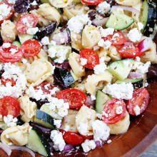
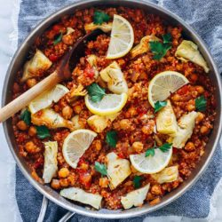
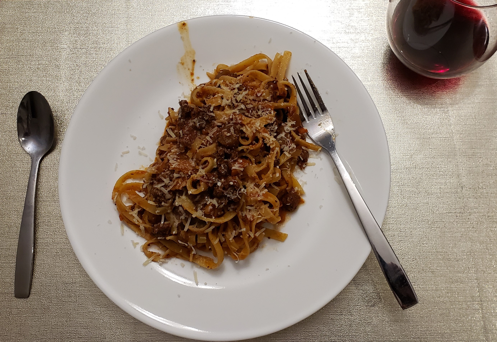
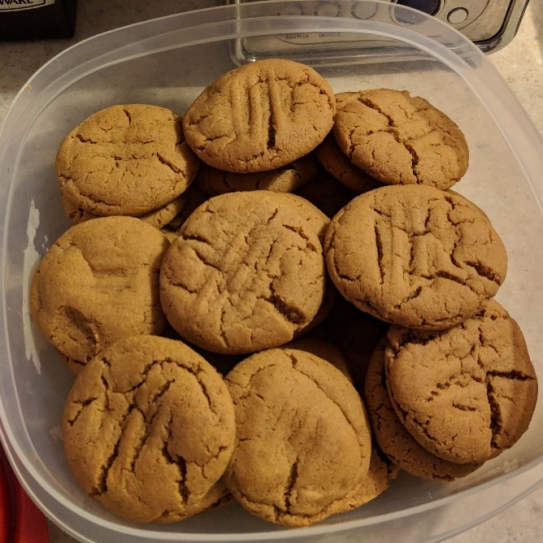

Introduction
This is my recipe book. I have spent many years collecting and refining recipes, here. I've collected them from friends, from family, and from strangers. It's not much, but it's mine and it tastes good.
If you'd like to see more professional thoughts on science, computing, and math, you can find my blog here.
Buttermilk pancakes and waffles
| Info | Amount |
|---|---|
| Prep Time | 15 min |
| Cook Time | 15 min |
| Yields | 8 10 cm pancakes or 2 waffles |
Added: 2011-09-01
Tags: #breakfast
Ingredients
| Quantity | Item |
|---|---|
| 1 cup | flour |
| 1 tsp | baking powder |
| 1/2 tsp | baking soda |
| 1/4 tsp | salt |
| 1 cup | milk |
| 1 | egg |
| 1.5 tbp | butter, melted |
Directions
- Heat lightly oiled pan or griddle to medium-high
- In separate bowls, combine dry ingredients and wet ingredients, respectively
- Add the dry bowl into the wet bowl, stirring slowly
- Whisk together until batter is fully mixed and slightly lumpy
- Cook for ~ 3 min, until golden brown
- Add fruit, cinnamon, icing sugar, etc as toppings
Dark Chocolate Waffles
| Info | Amount |
|---|---|
| Prep Time | 15 min |
| Cook Time | 15 min |
| Yields | 4 servings |
| Cost |
Added: 2017-01-22
Tags: #waffles #breakfast
Ingredients
| Quantity | Item |
|---|---|
| 2 | eggs, large |
| 2 cup | flour |
| 2 tsp | baking powder |
| 1/3 cup | brown sugar |
| 1/3 cup | cocoa powder, unsweetened |
| 1/2 tsp | salt |
| 1/4 cup | chocolate chips |
| 1/3 cup | olive oil |
| 7/4 cup | milk |
Directions
- Separate egg yolks from whites
- Whisk egg whites until peaks form
- Set each aside
- In a large bowl, mix all wet ingredients
- In another large bowl, whisk together all dry ingredients, except chocolate chips
- Add egg yolks and whisk
- Slowly add wet mix to dry mix, and whisk together until slightly lumpy
- Fold in egg whites
- Add oil to waffle iron, and cook
Pumpkin Waffles
| Info | Amount |
|---|---|
| Prep Time | 20 min |
| Cook Time | 1 h |
| Yield | 2 loaves |
Added: 2013-09-12
Tags: #breakfast
Ingredients
| Quantity | Item |
|---|---|
| 3 cup | flour |
| 1 tsp | ground cloves |
| 2 tsp | ground cinnamon |
| 1 tsp | ground nutmeg |
| 1/2 tsp | salt |
| 1 tsp | baking soda |
| 1/2 tsp | baking powder |
| 3 cup | granulated sugar |
| 1 cup | soft butter |
| 3 | large eggs |
| 16 oz can | pumpkin puree |
| 1/2 cup | chopped pecans (optional) |
Directions
- Preheat oven to 350 F and spray two medium loaf pans with non-stick cooking spray
- In a medium bowl, mix the flour, spices, salt, baking soda, and baking powder and set aside
- In another bowl add the butter and put it in the microwave for about 30 seconds, so that it is half melted
- Add the sugar, eggs
- Cream these three ingredients together until fluffy
- Add the pumpkin and combine well
- In three batches, add the dry ingredients to the butter, sugar mixture and mix gently until each batch is just incorporated. Scrape the sides between each batch
- Fold in the nuts
- Split the batter between the prepared pans.
- Bake side-by-side for about one hour or until an inserted knife comes out clean the top is golden
French Toast
| Info | Amount |
|---|---|
| Prep Time | 10 min |
| Cook Time | 5-10 min |
| Yields | 4 servings |
Added: 2013-09-14
Tags: #breakfast
Ingredients
| Quantity | Item |
|---|---|
| 2 | eggs |
| 2/3 cup | milk |
| 2 tsp | ground cinnamon |
| 8 slices | bread |
| 1-2 tsp | butter, melted |
Directions
- Either melt butter in frying pan/griddle or melt and mix with other ingredients
- Beat to make the mixture light
- Dip bread and fry
- Top with berries, jam, icing sugar, etc
Cinnamon Maple Granola
| Info | Amount |
|---|---|
| Prep Time | 5 mins |
| Cook Time | 35 mins |
| Yields | 4 cups |

Added: 2019-05-21
Tags: #cereal #granola #baking
Ingredients
| Quantity | Item |
|---|---|
| 4 cups | oats |
| 2 tsp | cinnamon |
| 1/2 cup | pure maple syrup |
| 1/3 cup | olive oil |
| 3/2 tsp | vanilla extract |
Directions
- Preheat oven to 325 F
- Prepare a large rimmed baking sheet with parchment paper or a silicone baking mat.
- In a large bowl, combine all ingredients. Stir to coat well.
- Transfer oatmeal mixture to prepared baking sheet.
- Spread out into an even layer, pressing down to compress the mixture.
- Bake for 35-40 minutes
- Remove from oven and cool, untouched, for 45 minutes
- Break into pieces
- Store in an airtight container for up to 2 weeks.
References
Greek fries
| Info | Amount |
|---|---|
| Prep Time | 10 min |
| Cook Time | 40 min |
| Yields | 3 servings |
Added: 2021-02-26
Tags: #appetizer #potato #fries
Ingredients
| Quantity | Item |
|---|---|
| 6 Tbsp | olive oil, divided |
| 3 | large Russet potatoes |
| 3 cloves | garlic, minced |
| salt | |
| pepper | |
| thyme | |
| oregano | |
| cayenne pepper | |
| feta, crumbled | |
| 1 handful | parsley |
| Tzatziki sauce |
Directions
- Preheat oven to 400 F
- Slice potatoes into 6 - 8 wedges each, then place into a large bowl of hot water for 10 min
- Drain and spread wedges on a large clean towel
- Pat dry
- Transfer wedges to a large mixing bowl
- Season generously with salt and pepper
- Drizzle with half the olive oil
- Toss to combine
- Spread wedges on a lightly oiled bakign sheet in a single layer
- Bake in oven for 20 min
- Flip wedges, then return for another 15 - 25 min
- Transfer to serving platter
- In a small bowl, combine remaining olive oil, garlic, thyme, oregano, and cayenne
- Drizzle oil mixture over the wedges
- Crumble feta and sprinkle fresh parsley over top
- Serve with a side of tzatziki sauce
References & Notes
- Original recipe
- Do not skip soaking the potato wedges in hot water, this helps get rid of the starch so that they potatoes don't stick to the pan.
- Leftovers can be stored in the fridge in a container for 3 - 4 days.
Sweet potato fries
| Info | Amount |
|---|---|
| Prep Time | 10 min |
| Cook Time | 30 min |
| Yields | 2 servings |
Added: 2013-09-14
Tags: #basics #potato #dinner
Ingredients
| Quantity | Item |
|---|---|
| 1 | sweet potato |
| 2 Tbsp | olive oil |
| corn starch | |
| salt | |
| pepper |
Directions
- Preheat the oven to 450 F
- Peel the sweet potato(es) and cut them into fries
- Toss fries into a mixing bowl, coat with cornstarch and olive oil
- Season with salt, pepper, and any other seasonings
- Pour fries onto non-stick baking sheet into a single layer
- Bake for 25-30 min, flipping half way through
Notes
- Cut the potatoes into similar shapes to ensure even cooking
- Pairs well with spicy mayo
Black bean quinoa falafel
| Info | Amount |
|---|---|
| Prep Time | 15 min |
| Cook Time | 45 min |
| Yields | 12 falafel |
Added: 2020-09-24
Tags: #vegetarian #prep #dinner
Ingredients
| Quantity | Item |
|---|---|
| 1 cup | cooked quinoa, cooled |
| 15 oz | black beans, rinsed, drained, dried |
| 1/4 cup | pumpkin seeds |
| 5 cloves | garlic, minced |
| 1/2 tsp | salt |
| 1 tsp | ground cumin |
| 1/2 tsp | coriander |
| 2 Tbsp | tomato paste |
Directions
- Prepare quinoa according to instructions, preheat oven to 350 F
- Add black beans to parchment-lined baking sheet
- Bake for 15 min until beans crack
- Remove from oven, increase temperature to 375 F
- Add black beans to food processor with pumpkin seeds and garlic
- Pulse into a loose meal
- Add quinoa and all remaining ingredients
- Blend to combine until a textured dough forms
- Scoop 3/2 Tbsp at a time, form into small discs
- Place on parchment-lined baking sheet
- Repeat for entire dough mixture
- Bake for 15 min
- Flip and back for another 10-15 min
- Garnish with chili garlic (optional) and serve with hummus or baba ghanoush
References & Notes
Bean medley salad
| Info | Amount |
|---|---|
| Prep Time | 30 min |
| Cook Time | 0 min |
| Yields | 6 servings |
Added: 2015-01-17
Tags: #gluten-free #vegetarian #lunch #dinner
Ingredients
| Quantity | Item |
|---|---|
| 1 cup | quinoa or barley |
| 10 oz | kale or parsley |
| 1/2 | red onion |
| 6 stalks | green onion |
| 15 oz | black beans |
| 15 oz | chickpeas |
| 100 g | feta |
| salt | |
| pepper | |
| cumin | |
| lemon | |
| cayenne pepper | |
| chili pepper |
Directions
- Make quinoa according to instructions, set aside
- Rinse greens (parsley or kale or spinach)
- Remove stems, chop
- Heat pan, add olive oil, add 1/4 greens and some water
- Add more water until all the greens are added and hydrated
- Be careful not to burn though
- Add chick peas to pan, heat for a few minutes
- Add black beans and quinoa, heat for a few minutes
- Add chopped onions
- Add spices and stir, lowering heat
- Add feta, lemon, and extra olive oil if desired, and serve
Greek tortellini salad
| Info | Amount |
|---|---|
| Prep Time | 15 min |
| Cook Time | 0 min |
| Yields | 4 servings |

Added: 2017-01-21
Tags: #vegetarian #salad #dinner
Ingredients
Salad
| Quantity | Item |
|---|---|
| 20 oz | tortellini |
| 3/2 cups | cherry tomatoes, cut in half |
| 1 | large cucumber, diced |
| 1 cup | kalamata olives, pit removed and chopped |
| 1/2 | red onion |
| 3/4 cup | feta |
Dressing
| Quantity | Item |
|---|---|
| 1/4 cup | olive oil |
| 3 Tbsp | red wine vinegar |
| 1 clove | garlic, minced |
| 1/2 tsp | dried oregano |
| salt | |
| pepper |
Directions
- Bring a large pot of salted water to a boil
- Cook the tortellini according to the package directions
- Drain the tortellini and rinse with cold water
- Place the tortellini in a large bowl
- Add the tomatoes, cucumber, olives, red onion, and feta cheese
- In a small bowl, whisk together the olive oil, vinegar, garlic, oregano, salt, and pepper
- Pour the dressing over the salad and stir until salad is well coated
- Serve immediately or place in the refrigerator
Notes
- This salad will keep in the fridge for up to 3 days
Craisin and feta salad
| Info | Amount |
|---|---|
| Prep Time | 10 min |
| Cook Time | 0 min |
| Yields | 4 servings |
Added: 2013-10-19
Tags: #salad #vegetarian #dinner
Ingredients
Salad
| Quantity | Item |
|---|---|
| 1 box | baby romaine lettuce |
| 1 cup | craisins |
| 1/3 cup | toasted pine nuts |
| 1/2 cup | goat feta |
Dressing
| Quantity | Item |
|---|---|
| 1/3 cup | olive oil |
| 1 Tbsp | red wine vinegar |
| 2 Tbsp | maple syrup |
| 1 tsp | dijon mustard |
| 1/2 tsp | oregano |
| salt | |
| pepper |
Directions
- Place pine nuts in frying pan on low and stir until golden brown
- Mix all salad ingredients in a bowl
- Mix all dressing ingredients in a small container with a lid
- Pour dressing over salad before serving, keeping leftover dressing in the fridge
Mediterranean salad
| Info | Amount |
|---|---|
| Prep Time | 10 min |
| Cook Time | 0 min |
| Yields | 4 servings |
Added: 2017-03-18
Tags: #salad #vegetarian #dinner
Ingredients
Salad
| Quantity | Item |
|---|---|
| 1 | cucumber, diced |
| 1/2 | red onion, diced |
| 15 oz | six bean medley |
| 1 | tomato, diced |
| 1/4 cup | kalamata olives, pitted and diced |
| 50 g | feta |
| 1/2 | lemon |
| 2 Tbsp | olive oil |
| 1 Tbsp | balsamic vinegar |
Directions
- Mix all ingredients except olive oil and vinegar in a medium sized bowl
- Zest and juice the lemon
- Dress with olive oil and vinegar before serving
Blackberry balsamic chicken salad
| Info | Amount |
|---|---|
| Prep Time | 30 min |
| Cook Time | 10 min |
| Yields | 4 servings |

Added: 2019-08-12
Tags: #salad #chicken #lunch #dinner
Ingredients
Vinaigrette
| Quantity | Item |
|---|---|
| 1/2 cup | blackberries |
| 2 Tbsp | balsamic vinegar |
| 2 Tbsp | olive oil |
| 2 Tbsp | honey |
| 2 tsp | dijon mustard |
| 1 tsp | soy sauce |
| 1 clove | garlic, minced |
| salt | |
| pepper |
Cheese
| Quantity | Item |
|---|---|
| 8 oz | goat cheese, sliced into 1/4" discs |
| 1/4 cup | flour |
| 1 | egg, lightly beaten |
| 1 cup | breadcrumbs |
Salad
| Quantity | Item |
|---|---|
| 1/2 lbs | chicken breasts |
| 6 cups | lettuce or spinach |
| 1 cup | blackberries |
| 1 cup | avocado |
| 1/4 cup | red onion, sliced |
| 1/4 cup | walnuts, pistachios, or almonds |
Directions
- Puree vinaigrette ingredients in a blender, store separately
- Dredge goat cheese slices in the flower
- Coat with eggs, then breadcrumbs
- Fry in oil over medium heat until golden
- Set aside on paper towels to drain
- Marinate chicken in half of the vinaigrette for 30 min
- Grill over medium-high heat until slightly charred
- Assemble all ingredients and serve
References & Notes
Honey roasted carrots
| Info | Amount |
|---|---|
| Prep Time | 10 min |
| Cook Time | 20 min |
| Yields | 6 servings |
Added: 2019-12-07
Tags: #vegetarian #side #dinner
Ingredients
| Quantity | Item |
|---|---|
| 2 lbs | rainbow carrots, peeled and sliced into 1/4 inch rounds |
| 2 Tbsp | butter, melted |
| 2 tsp | honey |
| 1 tsp | salt |
| 1/2 tsp | fresh thyme, chopped |
| 1/8 | cayenne pepper |
| 1/8 | cumin |
| 2 oz | goat cheese, crumbled |
| 1/3 cup | pomegranate seeds, about 1/2 pomegranate |
| 2 Tbsp | sunflower seeds |
Instructions
- Preheat oven to 425 F and line a baking sheet with foil.
- In a medium bowl toss cut carrots with melted butter, honey, and seasonings.
- Spread carrots out on the prepared baking sheet and roast for 20 minutes, flipping after 15 minutes.
- Transfer warm carrots to a serving dish and top with goat cheese, pomegranate seeds, and sunflower seeds.
- Serve warm.
References
Autumn arugula salad
| Info | Amount |
|---|---|
| Prep Time | 10 min |
| Cook Time | 30 min |
| Yields | 4 servings |
Added: 2020-12-22
Tags: #salad #vegetarian #summer #dinner
Ingredients
Salad
| Quantity | Item |
|---|---|
| 2 Tbsp | olive oil |
| 1 | acorn squash |
| 1/4 tsp | salt |
| 1/4 tsp | pepper |
| 2 tsp | brown sugar |
| 1/2 cup | pecans, chopped |
| 1/4 tsp | pumpkin pie spice |
| 6 cup | arugula |
| 1 | avocado |
| 1/2 cup | pomegranate seeds |
| 1 | cucumber, sliced |
Vinaigrette
| Quantity | Item |
|---|---|
| 1/3 cup | pomegranate juice |
| 1/4 cup | apple cider vinegar |
| 1/2 tsp | ginger, freshly grated |
| 1 clove | garlic, grated |
| 1/4 tsp | salt |
| 1/4 tsp | pepper |
| 1/4 cup | olive oil |
Directions
- Preheat oven to 425 F
- Slice acorn squash into 1 cm chunks, removing seeds
- Place on a baking sheet, cover with olive oil, salt, pepper, and brown sugar
- Place in over, roast for 10 min, flip, and bake for another 10 min
- In a small saucepan over low heat, toss pecans
- Toast until golden and fragment, adding a bit of brown sugar and pumpkin pie spice
- Slice avocado and cucumber, add remaining ingredients into a large bowl
- When the squash is done, cut into smaller pieces and add to salad
- Combine all vinaigrette ingredients in a small bowl, drizzle over salad as desired
References & Notes
Spicy rice
| Info | Amount |
|---|---|
| Prep Time | 10 min |
| Cook Time | 50 min |
| Yields | 2 servings |
Added: 2013-10-15
Tags: #side #rice #spicy #dinner
Ingredients
| Quantity | Item |
|---|---|
| 1 Tbsp | butter |
| 1/2 cup | onion, chopped finely |
| 1/2 stalk | celery, chopped finely |
| 1 clove | garlic |
| 1 | Thai chili, seeded and minced (optional) |
| 1/2 | carrot, peeled and chopped finely |
| 3/4 cup | long grain rice |
| 3/2 cup | chicken broth |
| 1 | lemon, zested |
| 1/3 cup | frozen peas |
| 2 tbsp | parsley, chopped |
| 2 tsp | thyme, chopped |
| salt | |
| pepper |
Directions
- Preheat oven to 350F
- In oven-proof Dutch oven on medium heat, melt 1 Tbsp butter
- Add onions, celery, garlic, and chili, and saute until softened (~ 5 min)
- Stir in carrot and continue for another 2 min
- Add rice to the pot, stirring and cooking for 1 min
- Pour chicken broth and zest over top
- Bring to boil before covering with lid
- Place in oven and bake for 40 min
- Remove from oven, stir frozen peas, parsley, and thyme
- Put lid back on, sit for a few minutes
- Season with salt and pepper before serving
Spanish Rice
| Info | Amount |
|---|---|
| Prep Time: | 5 min |
| Cook Time: | 20 min |
| Yields: | 5 servings |
Added: 2013-09-14
Tags: #side #rice #dinner
Ingredients
| Quantity | Item |
|---|---|
| 2 Tbsp | olive oil |
| 2 Tbsp | onion, chopped |
| 3/2 cups | rice, uncooked |
| 2 cups | chicken broth |
| 1 cup | salsa, chunky |
Directions
- Heat oil in large skillet over medium heat
- Stir in onion and cook till tender
- Mix rice into skillet and brown
- Add broth and salsa, and mix well
- Reduce heat, cover, and simmer until liquid is absorbed (~ 20min)
Spanakorizo rice
| Info | Amount |
|---|---|
| Prep Time | 5 min |
| Cook Time | 35 min |
| Yields | 6 servings |

Added: 2020-04-16
Tags: #vegetarian #rice #dinner
Ingredients
| Quantity | Item |
|---|---|
| 3 Tbsp | olive oil |
| 1 | medium onion, chopped |
| 4 cloves | garlic, chopped |
| 4 Tbsp | chives or scallions, chopped and divided |
| 4 Tbsp | dill |
| 1/2 lbs | baby spinach |
| 1 cup | basmati rice |
| 2 cup | vegetable broth |
| 3 Tbsp | butter |
| 2 Tbsp | lemon juice |
| 2 tsp | lemon zest |
| feta |
Directions
- Heat olive oil in large pot over medium-high heat
- Saute onions
- Add garlic, half the dill and chives
- Saute for another minute
- Add spinach, cook until wilted
- Add salt, rice, and broth
- Stir, bring to a boil, cover, reduce heat to medium-low
- Simmer for 20 min
- Stir in butter, lemon juice, lemon zest, and remaining chives and dill
- Garnish with feta, serve with lemon wedges
References & Notes
Alfredo sauce
| Info | Amount |
|---|---|
| Prep Time | 5 min |
| Cook Time | 10 min |
| Yields | 4 servings/1 box of pasta |
Added: 2013-09-14
Tags: #sauce #condiment
Ingredients
| Quantity | Item |
|---|---|
| 1 Tbsp | butter |
| 1/4 cup | flour |
| 1 tsp | salt |
| 3/4 cup | parmesan |
| 3 cups | milk |
| 1/2 tsp | pepper |
| pinch | nutmeg |
Directions
- Melt butter in pan over medium heat
- Mix milk and flour in similar proportions until all used
- Reduce heat, add remaining ingredients, stirring constantly
- Once all ingredients are added, heat until boiling, then remove from heat and serve
References & Notes
- Try to keep a play-doh-like consistency to let the flour absorb the milk
- In the end, the flour should be evenly distributed through the milk
Artichoke and spinach dip
| Info | Amount |
|---|---|
| Prep Time | 15 min |
| Cook Time | 25 min |
| Yields | 12 servings |
Added: 2015-01-02
Tags: #sauce #condiment
Ingredients
| Quantity | Item |
|---|---|
| 8 oz | cream cheese (single package) |
| 1/4 cup | sour cream |
| 1/4 cup | parmesan, grated |
| 1/4 cup | Romano cheese, grated |
| 1 clove | garlic, minced |
| 1/2 tsp | dried basil |
| 1/4 tsp | garlic salt |
| salt | |
| pepper | |
| 14 oz | artichoke hearts |
| 1/2 cup | frozen spinach, chopped, thawed, and drained |
| 1/4 cup | mozzarella, grated |
Directions
- Preheat over to 350 F
- Lightly grease a small baking dish
- In a medium bowl, mix together cream cheese, sour cream, parmesan, romano, garlic, basil, garlic salt, salt, and pepper
- Once well mixed, gently stir in artichoke hearts and spinach
- Transfer mixture to baking dish
- Top with mozzarella
- Bake for 25 min, until bubbly and lightly browned
Hummus
| Info | Amount |
|---|---|
| Prep Time | 15 min |
| Cook Time | 5 min |
| Yields | 1 cup |
Tags: #condiment
Ingredients
| Quantity | Item |
|---|---|
| 1 clove | garlic |
| 2 tsp | tahini |
| 15 oz can | chickpeas |
| 1 | lemon, juiced |
| 1 Tbsp | olive oil |
| 1 tsp | salt |
| 2 Tbsp | parsley, roughly chopped |
Directions
- Put all ingredients, except for parsley, in a food processor and blend until smooth
- Use a spoon to fold in the chopped parsley
- Serve immediately
References & Notes
- Original recipe
- Cover, store in the fridge for up to a week
Spicy mayo
| Info | Amount |
|---|---|
| Prep Time | 5 min |
| Cook Time | 0 min |
| Yields | 1/2 cup |
Added: 2013-09-13
Tags: #sauce #condiment
Ingredients
| Quantity | Item |
|---|---|
| 1/2 cup | mayonnaise |
| 1 tsp | Sriracha sauce |
| 1/4 tsp | cayenne pepper |
Directions
- Mix all ingredients together in a small bowl or container
References & Notes
- Pairs well with sweet potato fries
Pulled pork
| Info | Amount |
|---|---|
| Prep Time | 15 min |
| Cook Time | 5 h |
| Yields | 8 servings |

Added: 2017-12-03
Tags: #pork #slow-cooker #dinner
Ingredients
| Quantity | Item |
|---|---|
| 1 tsp | vegetable oil |
| 4 lbs | pork shoulder roast |
| 1 cup | barbecue sauce |
| 1/2 cup | apple cider vinegar |
| 1/2 cup | chicken broth |
| 1/4 cup | light brown sugar |
| 1 Tbsp | mustard |
| 1 Tbsp | Worcestershire sauce |
| 1 Tbsp | chili powder |
| 1 | large onion, diced |
| 2 cloves | garlic, minced |
| 2/3 tsp | dried thyme |
| 8 | hamburger buns |
Directions
- Pour vegetable oil into bottom of slow cooker
- Place in pork roast
- Pour in barbecue sauce, apple cider vinegar, and chicken broth
- Stir in brown sugar, mustard, Worcestershire sauce, chili powder, onion, garlic, and thyme
- Cover and cook on high until pork easily shreds with a fork (5-6 h)
- Remove roast from slow cooker and shred meat with two forks
- Return shredded pork to slow cooker to stir meat into the juices
- Serve on hamburger buns
Smashed chickpea avocado sandwich
| Info | Amount |
|---|---|
| Prep Time | 10 min |
| Cook Time | 0 min |
| Yields | 2 sandwiches |
Added: 2019-12-07
Tags: #sandwich #vegetarian #lunch #dinner
Ingredients
| Quantity | Item |
|---|---|
| 15 oz | chickpeas, drained, rinsed |
| 1 | large ripe avocado |
| 2 tsp | lemon juice |
| 1/4 cup | dried cranberries |
| 1 handful | spinach or arugula |
| 1/8 | red onion, sliced |
| 4 slices | French bread |
| salt | |
| pepper |
Directions
- In a medium bowl, smash chickpeas with a fork
- Add in avocado, lemon juice, cranberries, and spinach and us a fork to mash everything together
- Place in refrigerator until ready to serve
- Toast bread, spoon chickpea mix into each sandwich
- Top with red onion, cut sandwiches in half
References & Notes
Roasted tomato aioli sandwiches
| Info | Amount |
|---|---|
| Prep Time | 10 min |
| Cook Time | 20 min |
| Yields | 2 sandwiches |
Added: 2020-05-21
Tags: #vegetarian #sandwich #lunch #dinner
Ingredients
| Quantity | Item |
|---|---|
| 2 | beefsteak tomatoes, sliced |
| 1/4 cup | mayonnaise |
| 1/2 | lemon, juiced |
| 2 cloves | garlic, minced |
| 4 slices | sourdough, thick slices |
| 1 | avocado |
| olive oil | |
| salt | |
| pepper | |
| oregano | |
| butter | |
| basil | |
| arugula |
Directions
- Heat oven to 350 F
- Line baking sheet with parchment paper
- Place tomato slices on baking sheet
- Drizzle with olive oil, season with salt, pepper, and oregano
- Place in oven for 15-20 min
- Combine mayo, lemon juice, and garlic, with a dash of salt and pepper in a small bowl
- Butter each slice of bread, heat a pan over medium heat and toast for a few minutes
- Assemble into a sandwich, slice diagonally, and serve
References & Notes
- Original recipe
- Any leftover aioli can be stored in the fridge for a week
One pot wraps
| Info | Amount |
|---|---|
| Prep Time | 10 min |
| Cook Time | 20 min |
| Yields | 4 servings |
Added: 2020-02-22
Tags: #vegetarian #dinner
Ingredients
| Quantity | Item |
|---|---|
| 1 cup | quinoa, uncooked |
| 1.75 cup | vegetable broth |
| 15 oz | black beans, drained, rinsed |
| 1 | small red bell pepper, diced |
| 12 oz | diced pineapple |
| 1 tsp | paprika |
| 1 Tbsp | lime juice |
| lettuce or flour wraps |
Directions
- In a large pot, bring quinoa and broth to a simmer over medium heat
- Add all other ingredients but the wraps, and mix
- Bring to a boil over medium-high heat, reduce to medium, cover, and cook for 15-20 min
- Stir and serve in lettuce or wraps
- Garnish with cilantro, parsley, avocado, salsa, and/or green onion
References & Notes
- Original recipe: Wendy McNeil
Sloppy glows
| Info | Amount |
|---|---|
| Prep Time | 15 min |
| Cook Time | 15 min |
| Yields | 4 servings |
Added: 2021-02-08
Tags: #vegan #lentils #dinner
Ingredients
| Quantity | Item |
|---|---|
| 4 | hamburger buns |
| 1 | red onion |
| 2 Tbsp | olive oil |
| 4 cloves | garlic |
| 2 tsp | chili powder |
| 2 tsp | cumin |
| 1 cup | tomato sauce |
| 2/3 cup | roasted red peppers |
| 1/3 cup | sun-dried tomatoes |
| 400 mL | lentils |
| 2 Tbsp | Worcestershire sauce |
| 2 Tbsp | brown sugar |
| 1 tsp | apple cider vinegar |
| salt | |
| pepper |
Directions
- Slice red onion in half
- Slice one half into thin circles for garnishing, later
- Finely chop the other half
- In a large skillet, heat oil over medium heat
- Add finely chopped onion and garlic
- Saute for 5 - 6 min
- Stir in chili powder and cumin
- Cook for a minute
- Add tomato sauce, roasted red peppers, sun-dried tomatoes, lentils, Worcestershire sauce, brown sugar, salt, and black pepper
- Stir to combine
- Raise to medium-high heat, bring to a rapid simmer
- Reduce the heat to medium, simmer uncovered, stirring occasionally for 5 - 8 min
- Stir vinegar into mixture
- Add most salt, pepper, Worcestershire sauce, and/or sugar to taste
- Reduce to low heat, cover, simmer until ready to serve
References & Notes
- Oh She Glows For Dinner
Winter salad bowl
| Info | Amount |
|---|---|
| Prep Time | 15 min |
| Cook Time | 30 min |
| Yields | 6 servings |
Added: 2020-02-01
Tags: #vegetarian #vegan #dinner
Ingredients
Salad
| Quantity | Item |
|---|---|
| 2 | large Yukon gold potatoes, diced |
| 12 oz | green beans, trimmed and chopped |
| 1 clove | garlic |
| 1 Tbsp | olive oil |
| 1 cup | quinoa, uncooked |
| 1 cup | kale, stemmed, finely chopped |
| 3 | green onions, sliced |
| 1/4 cup | toasted pumpkin seeds |
| 1 | large ripe avocado |
| salt | |
| pepper |
Dressing
| Quantity | Item |
|---|---|
| 1/4 cup | red wine vinegar |
| 1/4 cup | olive oil |
| 2 tsp | dijon mustard |
| 1 Tbsp | maple syrup |
| salt | |
| pepper |
Directions
- Preheat oven to 400 F
- Line extra-large baking sheet with parchment paper
- Place chopped potatoes, green beans, and whole garlic cloves onto sheet
- Toss with oil and season with salt and pepper
- Spread into even layer, cook for 15 min
- Flip and roast again for another 15 min
- Meanwhile, cook quinoa according to instructions, fluff with a fork
- Whisk all dressing ingredients together
- Cut off end of garlic clove, push out cooked garlic into dressing, and whisk together
- Spoon potatoes and beans into a large serving bowl
- Add quinoa, kale, green onions, dressing, and toss all together
- Season with salt and pepper, top with seeds and avocado
References & Notes
Sweet potato quinoa bowl
| Info | Amount |
|---|---|
| Prep Time | 10 min |
| Cook Time | 35 min |
| Yields | 4 servings |
Added: 2020-03-01
Tags: #vegetarian #vegan #bowl #dinner
Ingredients
| Quantity | Item |
|---|---|
| 1 cup | quinoa, uncooked |
| 2 cups | vegetable broth |
| 1/2 lbs | broccoli florets |
| 1 | sweet potato, chunked |
| 15 oz | chickpeas, drained, rinsed |
| 1 handful | kale, chopped |
| 1/4 cup | parsley, chopped |
| 3 Tbsp | feta |
| 1 | lemon |
| 2 tsp | apple cider vinegar |
| 2 tsp | maple syrup |
| olive oil | |
| salt | |
| pepper |
Directions
- Preheat oven to 425 F
- Place quinoa and broth in a medium saucepan
- Brin to boil, reduce to simmer, cover, and cook for 15 min
- Remove from heat, stir with a fork, place in a large bowl
- Toss broccoli and sweet potato with olive oil
- Place on a baking sheet and roast in the oven for 20 min
- Add chickpeas and kale to potatoes and broccoli
- Roast entire sheet for another 15 min
- Combine cooked vegetables with quinoa
- Sprinkle parsley and crumble feta
- In a small bowl, whisk together lemon, apple cider vinegar, syrup, 3 Tbsp olive oil, salt, and pepper
- Plate quinoa and vegetables, top with dressing
References & Notes
Sweet potato burrito bowl
| Info | Amount |
|---|---|
| Prep Time | 10 min |
| Cook Time | 30 min |
| Yields | 4 servings |

Added: 2021-03-03
Tags: #dinner #potato #vegan
Ingredients
| Quantity | Item |
|---|---|
| 1 | large sweet potato |
| 2 | bell peppers |
| 1 | small red onion |
| 1 tsp | paprika |
| 2 Tbsp | olive oil |
| 1/2 cup | rice |
| 14 oz | black beans |
| 1 cup | cooked corn |
| 1 | avocado |
| salt | |
| pepper |
Directions
- Preheat oven to 400 F
- Chop sweet potato into chunks
- Slice peppers and onion into long, thin strips
- Toss vegetables with olive oil, paprika, salt, and pepper
- Place on a lined baking sheet and cook for 25 - 30 min, until potatoes are tender
- While the vegetables are roasting, cook the rice
- With 5 min left on the vegetables, drain and rinse black beans
- Transfer to a pan, add salt, pepper, paprika, corn, and olive oil to heat up
- Mix black beans with roasted vegetables and serve on a bed of rice in each bowl
- Garnish with sliced avocado and a dressing of olive oil, lemon juice, and minced garlic
References & Notes
Thai veggie bowl
| Info | Amount |
|---|---|
| Prep Time | 25 min |
| Cook Time | 10 min |
| Yields | 4 servings |

Added: 2020-03-13
Tags: #vegetarian #vegan #dinner
Ingredients
Thai peanut sauce
| Quantity | Item |
|---|---|
| 1 clove | garlic, minced |
| 2 Tbsp | olive oil |
| 3 Tbsp | peanut butter |
| 2 tsp | ginger, grated |
| 3 Tbsp | lime juice |
| 3 Tbsp | soy sauce |
| 1 tsp | sugar |
Salad
| Quantity | Item |
|---|---|
| 1 cup | rice |
| 16 oz | edamame beans |
| 1 | red bell pepper, diced |
| 1/2 | cucumber, diced |
| 1 | carrot, juilienned |
| 4 | green onions |
| 1/4 cup | parsley, chopped |
| olive oil | |
| sesame seeds |
Directions
- In a food processor, combine all sauce ingredients and blend until smooth
- Cooke the rice/soba noodles according to instructions
- If noodles, drain, rinse under cold water, toss with olive oil
- Transfer to a large bowl
- Add remaining salad ingredients
- Top with sauce and sesame seeds when serving
References & Notes
- Original recipe: Oh She Glows
Spanish quinoa
| Info | Amount |
|---|---|
| Prep Time | 10 min |
| Cook Time | 20 min |
| Yields | 4 servings |

Added: 2020-05-21
Tags: #rice #vegetarian #bowl #dinner
Ingredients
| Quantity | Item |
|---|---|
| 1 Tbsp | olive oil |
| 1 | small yellow onion, finely diced |
| 3 cloves | garlic, minced |
| 2 tsp | paprika |
| 1 tsp | cumin |
| 1 tsp | oregano |
| 1/4 tsp | cayenne pepper |
| 1/2 tsp | salt |
| 1 cup | quinoa, uncooked |
| 15 oz | diced tomatoes |
| 15 oz | chickpeas, drained, rinsed |
| 2 cups | vegetable broth |
| 15 oz | artichoke hearts, quartered, drained |
| 1 | lemon |
| parsley |
Directions
- In a large skillet, heat olive oil over medium heat
- Add onion, garlic, cumin, oregano, cayenne, and salt
- Saute until onion is translucent
- Add quinoa, diced tomatoes with juices, chickpeas, and vegetable broth
- Bring to a low boil
- Cover with lid and simmer for 20-30 min, stirring intermittently
- Stir in artichoke hearts until heated through
- Garnish with juice from one lemon and fresh parsley
References & Notes
Roasted chickpea stuffed avocadoes
| Info | Amount |
|---|---|
| Prep Time | 10 min |
| Cook Time | 20 min |
| Yields | 2 servings |

Added: 2017-08-22
Tags: #vegetarian #avocado #dinner
Ingredients
Roasted chickpeas
| Quantity | Item |
|---|---|
| 15 oz | chickpeas, drained, rinsed |
| 1 Tbsp | olive oil |
| 2 tsp | smoked paprika |
| 1 tsp | pepper |
| 1/2 tsp | cayenne pepper |
| 1/2 tsp | salt |
| 4 | ripe avocadoes |
| 1/2 | [tomato], diced |
| 1 | lemon |
Yogurt sauce
| Quantity | Item |
|---|---|
| 1/4 cup | plain Greek yogurt |
| 1 clove | garlic, minced |
| 2 Tbsp | parsley, chopped |
| pepper |
Directions
- Preheat oven to 400 F
- Pour chickpeas onto paper towels to pat dry, rolling to remove skins
- In a medium sized bowl, mix chickpeas, olive oil, and spices
- Spread chickpeas onto parchment lined baking sheet
- Cook for 20 min in the oven
- Combine all dressing ingredients in a small bowl
- When chickpeas have finished cooking, slice avocados in half, fill with chickpeas, drizzle with lemon juice, and sprinkle with salt and pepper
- Serve in a bowl with diced tomato and a dollop of the yogurt sauce
Cod and tangy tartar sauce
| Info | Amount |
|---|---|
| Prep Time | 15 min |
| Cook Time | 10 min |
| Yields | 4 filets |
Added: 2013-09-14
Tags: #fish #dinner
Ingredients
Cod
| Quantity | Item |
|---|---|
| 1/4 cup | flour |
| 1 tsp | salt |
| 1/2 tsp | pepper |
| 1/4 tsp | paprika |
| 4 | cod filets |
Tartar sauce
| Quantity | Item |
|---|---|
| 1/3 cup | sour cream |
| 1/4 cup | mayonnaise |
| 2 Tbsp | relish |
| 1 tsp | parsley, chopped |
| 1 tsp | capers, drained |
| 1/2 tsp | lemon zest |
| 1 tsp | lemon juice |
| 1/4 tsp | garlic powder |
Directions
- Mix flour, salt, pepper, and paprika together in a wide bowl
- Dredge both sides of each filet, shaking off excess flour
- Heat a large non-stick skillet to medium-high heat
- Add a drizzle of olive oil to the pan
- Cook fish for 10 min until flaky, flipping halfway through
- Combine all tartar sauce ingredients in a small bowl and set aside
Spicy halibut
| Info | Amount |
|---|---|
| Prep Time | 10 min |
| Cook Time | 10 min |
| Yields | 4 filets |
Added: 2013-09-15
Tags: #fish #dinner
Ingredients
| Quantity | Item |
|---|---|
| 1 slice | apple wood smoked bacon |
| 1/2 tsp | salt |
| 1/2 tsp | paprika |
| 1/4 tsp | pepper |
| 2 tsp | garlic, minced |
| 4 filets | halibut |
| 4 oz | baby spinach |
Directions
- Cook bacon until crisp. Crumble, set aside.
- Combine salt, paprika, and pepper in a small bowl
- Sprinkle evenly over filets, using your hands to press them into the filets
- Add filets to the pan with bacon drippings
- Cooke for 3 min each side, or until flaky
- Add garlic to pan, cooking for 1 min
- Remove fish, add spinach and bacon into the pan, and cook until spinach is wilted
- Plate all ingredients and serve
Salmon, asparagus, and rice
| Info | Amount |
|---|---|
| Prep Time | 10 min |
| Cook Time | 20 min |
| Yields | 4 servings |
Added: 2015-03-05
Tags: #fish #dinner
Ingredients
| Quantity | Item |
|---|---|
| 4 filets | salmon |
| 1 lb | asparagus |
| 3 Tbsp | olive oil |
| 2 cloves | garlic, minced |
| 1 | lemon, thinly sliced |
| salt | |
| pepper | |
| dill | |
| thyme | |
| rosemary | |
| parsley |
Directions
- Preheat oven to 400 F and tear four sheets of aluminium foil
- Divide asparagus into 4 equal portions and layer each in the centre of each strip of foil
- In a small bowl, stir together olive oil, garlic, salt, and pepper
- Drizzle each filet with the oil mixture
- Rinse salmon and allow excess water to run off
- Season each filet with salt and pepper, and any or all of dill, thyme, rosemary, and parsley
- Layer filets over each stack of asparagus
- Drizzle remaining olive oil mixture over filets
- Top each with 2 sprigs of dill (or 1-2 tsp of other herbs) and 2 lemon slices
- Wrap sides of the foil inwards, over the salmon, to enclose
- Place foil pouches on a baking sheet
- Bake for approximately 20 min, depending on thickness of filets
Shallow-fried beer-battered fish and chips
| Info | Amount |
|---|---|
| Prep Time | 5 min |
| Cook Time | 15 min |
| Yields | 2 filets |
Added: 2020-04-26
Tags: #fish #dinner
Ingredients
| Quantity | Item |
|---|---|
| 2 filets | cod or haddock |
| 1 | egg |
| 1 cup | flour, separated |
| 1 tsp | baking powder |
| 3/2 tsp | curry powder, optional |
| 150 mL | beer |
| 2 | yukon gold potatoes |
| 1/2 cup | sunflower oil |
| 2 | shallots |
| 1 | lemon |
| salt | |
| creme fraiche | |
| mayonnaise | |
| gherkin pickles | |
| capers or parsley | |
| tabasco sauce, optional |
Directions
- Pour sunflower oil into a large saucepan
- Heat to just below the smoking point
- Preheat oven to 350 F
- Mix 1/2 cup of flour with baking soda and 1 tsp of curry powder
- Add beer and whish together until smooth and runny
- Separate egg white into a small bowl
- Whisk until peaks are stiff
- Add a pinch of salt
- Pour into batter, whisk together
- Mix 1/2 cup of flour with 1/2 tsp of curry powder, whisk in a large flat saucepan or bowl
- Salt both sides of the filets
- Dredge both side of the fish in the flour
- Toss back and forth to remove excess flour
- Drop fish into the batter
- Lift by the corners, flip from side to side to completely cover in batter
- Lay into the hot pan with oil, away from you
- Reduce heat, baste top of fish using a metal spoon, cooking for 2 min
- While fish is frying, square top and bottom of potatoes
- Thinly slice into fries
- Dry with paper towel to remove starch and moisture
- Season with salt and pepper, set aside
- Lift fish to edge of the pan to gently flip over
- Baste again, let cook for another 2 min
- Remove fish from oil, set aside on over-safe dish covered in paper towel
- Place on top rack in the oven while potatoes fry
- Place first into oil, raise heat, cook for 4 min
- Mix creme fraiche and mayo in a small bowl
- Dice and add shallots, gherkins, and capers
- Add a splash of tabasco sauce
- Cut a slice of lemon, squeeze juice into tartar sauce
- Remove fries from oil, place onto paper towel and rub dry
- Remove fish from oven, salt with fries, and serve
- Garnish with lemon wedge
References & Notes
- Original recipe
- If oil gets too hot, add a splash of room temperature oil, then remove from heat
Lasagna
| Info | Amount |
|---|---|
| Prep Time | 30 min |
| Cook Time | 4 h |
| Yields | 8 servings |
Added: 2019-03-23
Tags: #pasta #lasagna #vegetarian #dinner
Ingredients
| Quantity | Item |
|---|---|
| 500 g | ground beef (exclude if vegetarian) |
| 3 handfuls | spinach (exclude if carnivorous) |
| 2 tsp | salt |
| 1 tsp | pepper |
| 1 | large onion, chopped |
| 1 tsp | italian seasoning |
| 2 Tbsp | dried parsley |
| 2 tsp | garlic powder |
| 6 oz | tomato paste |
| 28 oz | tomato sauce |
| 5/4 cups | water |
| 8 oz | lasagna noodles, uncooked |
| 4 cups | shredded mozzarella |
| 3/2 cups | ricotta |
| 1/2 cup | parmesan |
Directions
- In a large skillet over medium heat brown the ground beef and onion
- Add salt, pepper, Italian seasoning, parsley, garlic powder, tomato paste, tomato sauce, sugar, and water
- Stir and simmer 15-20 min
- Spread a fourth of the meat sauce into the bottom of your slow cooker
- Arrange a third of the noodles over the sauce (break the noodles to fit, if necessary)
- Combine the mozzarella, cottage cheese and parmesan cheese in a medium bowl
- Spoon a third of the mixture over noodles
- Repeat layers twice
- Top with remaining meat sauce and sprinkle with extra mozzarella cheese, if desired
- Cover and cook on low for about 4-5 hours or until noodles are tender
References & Notes
- Original recipe
- Substitute ground beef with 3 handfuls of spinach, if making vegetarian
Farfalle, tomato, feta, and balsamic
| Info | Amount |
|---|---|
| Prep Time | 10 min |
| Cook Time | 15 min |
| Yields | 4 servings |
Added: 2013-09-22
Tags: #pasta #vegetarian #dinner
Ingredients
| Quantity | Item |
|---|---|
| 6 oz | farfalle, uncooked |
| 2 cups | tomato grapes, halved |
| 1 cup | seedless green grapes, halved |
| 1/3 cup | fresh basil, thinly sliced |
| 2 Tbsp | balsamic vinegar |
| 2 Tbsp | shallots or red onion, chopped |
| 2 tsp | capers |
| 1 tsp | dijon mustard |
| 1 clove | garlic. minced |
| 4 oz | feta, crumbled |
| salt | |
| pepper | |
| olive oil |
Directions
- Cook pasta according to directions, omitting salt and fat
- Drain, combine with tomatoes, grapes, and basil in large bowl
- While pasta cooks, combine vinegar and following 6 ingredients in small bowl
- Gradually add oil to vinegar, stirring constantly
- Drizzle vinaigrette over pasta, and toss well to coat
Basil and tomato orzo
| Info | Amount |
|---|---|
| Prep Time | 15 min |
| Cook Time | 10 min |
| Yields | 4 servings |
Added: 2017-05-28
Tags: #pasta #vegetarian #lunch #dinner
Ingredients
| Quantity | Item |
|---|---|
| 2 cups | orzo, uncooked |
| 25 | fresh basil leaves |
| 1 Tbsp | oregano leaves |
| 1 | shallot (or 1/4 red onion) |
| 1 clove | garlic, minced |
| 1/3 cup | olive oil |
| 1 tsp | honey |
| 1 Tbsp | water |
| 1 cup | cherry tomatoes, halved |
| 1 cup | parmesan, grated |
| 5 | mint leaves, chopped |
| 1 | lemon, zested and juiced |
| salt |
Directions
- Cook orzo pasta according to package directions. Set aside.
- Place basil leaves, shallot, garlic, oil, lemon zest and juice, honey and salt in a blender with water and give it a whiz until blended.
- Mix dressing into pasta
- Stir in cherry tomatoes and Parmesan
- Garnish with fresh chopped mint
Peanut butter noodles
| Info | Amount |
|---|---|
| Prep Time | 5 min |
| Cook Time | 10 min |
| Yields | 6 servings |
Added: 2020-05-21
Tags: #noodle #vegetarian #dinner
Ingredients
| Quantity | Item |
|---|---|
| 16 oz | brown rice noodles |
| 2 cloves | garlic, minced |
| 1 Tbsp | olive oil |
| 2/3 cup | peanut butter |
| 3 Tbsp | soy sauce |
| 1/4 cup | vegetable broth or chicken broth |
| 1 Tbsp | rice vinegar |
| 1 Tbsp | sesame oil |
| 1 Tbsp | maple syrup |
| 1/4 cup | peanuts, crushed |
| 1/2 tsp | red pepper flakes |
| 1 stalk | green onion |
Directions
- Cook noodles according to instructions
- Saute garlic on low heat until golden brown
- Add remaining sauce ingredients in a bowl, whisk until smooth
- Add sauce to noodles and mix thoroughly
- Garnish with crushed peanuts, green onion, and red pepper flakes
References & Notes
Aglio, olio e peperoncino
Garlic, olive oil and chili pepper
| Info | Amount |
|---|---|
| Prep Time | 5 min |
| Cook Time | 15 min |
| Yields | 4 servings |
Added: 2020-11-01
Tags: #pasta #dinner
Ingredients
| Quantity | Item |
|---|---|
| 4 cloves | garlic, finely diced |
| 3/4 cup | olive oil |
| 20 | anchovies |
| 30 | cherry tomatoes, halved |
| 500 g | spaghetti or spaghettoni |
| pepper | |
| dry chili flakes |
Directions
- In a big non-stick pan add the olive oil, chili peppers and the garlic
- Cook the garlic until it is nice and golden (white: too early, brown: too late)
- Remove from heat and add anchovies
- Once searing, return back to the heat and add cherry tomatoes
- Add pepper to taste, no need for salt
- Fry on medium heat and have the tomatoes blister
- Reduce heat and let simmer while the pasta cooks until al dente
- Drain pasta, then toss with mixture in the pan before serving
References & Notes
- Originally from Giacomo Grillo.
This recipe is the favorite of my dad. After a long and hard day at work, this pasta dish is all he needs to be in peace and happy. It is super-easy and straightforward but incredibly delicious.
- The sauce takes minutes to prepare so bring the water to the boil. Do not add a lot of salt to the water since the sauce is a little strong on seasoning.
- The reaction after adding the anchovies is pretty violent, so add them and with a wooden spoon and melt them with the heat off
- You can prepare a little fancy garnish by toasting some breadcrumbs and fresh parsley in a non-stick pan until breadcrumbs are golden brown. Once you serve the pasta sprinkle some breadcrumbs on the pasta.
Linguine, zucchine, e gamberetti
Linguine with zucchini, and prawns
| Info | Amount |
|---|---|
| Prep Time | 5 min |
| Cook Time | 20 min |
| Yields | 4 servings |
Added: 2020-11-01
Tags: #pasta #dinner
Ingredients
| Quantity | Item |
|---|---|
| 1 clove | garlic, finely diced |
| 2 | shallots, finely diced |
| 1 | small zucchini, sliced in half moons |
| 300 - 350 g | prawns, thawed |
| 500 g | linguine |
| 2 Tbsp | olive oil |
| thyme | |
| salt | |
| pepper |
Directions
- In a hot non-stick pan, add olive oil, garlic, and shallots
- Season with salt, pepper, and thyme
- Once garlic is golden, add the zucchini
- Season again with salt, pepper, and thyme
- Reduce to medium-high heat and toss together
- Slowly add a cup of water to stop the zucchini from burning
- If not soft by the time the water has boiled, add another cup until almost cooked
- When zucchini is 3/4 of the way cooked, add the prawns
- Season again with salt and pepper
- Reduce to medium heat and let simmer
- Cook until the prawns are firm and their colour changes
- While the prawns are cooking, cook pasta to al dente
- Drain pasta and toss together with prawns and zucchini
References & Notes
- Originally from Giacomo Grillo.
We can say that this is a classic. In Italy you may find a risotto cooked with the same ingredients, but a pasta dish is a perfect way to celebrate two ingredients made for one another.
- Try to use "elongated shallots" (aka "banana shallots") because they're sweeter and less harsh on the palate.
- Make sure that frozen prawns are completely defrosted / fresh prawns are clean (I [Giacomo] normally use raw peeled frozen prawns)
Pasta al ragù
Pasta in bolognese sauce
| Info | Amount |
|---|---|
| Prep Time | 20 min |
| Cook Time | 6 h |
| Yields | 6 servings |

Added: 2020-11-01
Tags: #pasta #dinner
Ingredients
| Quantity | Item |
|---|---|
| 1/2 | red onion, finely diced |
| 1 | carrot, finely diced |
| 2 stalks | celery, finely diced |
| 1 clove | garlic, finely diced |
| 400 g | medium ground beef |
| 250 g | ground pork or bangers sausages |
| 750 mL | red wine |
| 2 Tbsp | tomato paste |
| 800 g | finely diced tomatoes (Mutti Polpa) |
| 3 Tbsp | olive oil |
| 500 g | tortiglioni or tagliatelle |
| parmesan | |
| salt | |
| pepper | |
| thyme |
Directions
- In a large sauce pan add 3 Tbsp of olive oil and the soffritto
- Season with salt, pepper, and thyme
- Let the soffritto cook on high heat until everything is appassito, meaning that the colors are not bright anymore, but going towards the yellow
- Add ground pork
- If using bangers, remove them from the casing
- Keep mixing and breaking the pork with a wooden spoon
- When almost half of the pork changes color, add the ground beef
- Keep the gas high and keep mixing and breaking the meats as much as you can
- Once all the meats change colour add the wine and let the alcohol completely evaporate
- You know when the alcohol is gone when the smell is only aromatic and does not "hit" your nose. Or just wait to reduce the liquid by half
- Add the tomato paste and mix
- Cook for 2-3 min (you need to cook out the paste otherwise it will turn more sour)
- Add tomato sauce
- Season with salt, pepper, and thyme (stay light on the thyme, it is an aroma you want in the sauce)
- Taste to the correct seasoning (liquid will reduce so the flavour will intensify)
- Bring up the sauce to a boil, then reduce to the lowest setting, maintaining a gentle boil
- Cover and let the sauce cook for 6 h (the more the better)
- Stir every 20-30 min
- If after 2-3 h the sauce is still very liquid, simmer without a covert to facilitate evaporation
- If you do this, mix the sauce every 15 min to make sure it does not reduce too much.
- Cook tortiglioni or tagliatelle al dente
- Be generous with the sauce and serve with a freshly grated parmesan cheese
References & Notes
- Originally from Giacomo Grillo.
I am very proud and in love with this sauce. I played soccer since I was 7 years-old until I was 23 and every Sunday it was game-day. I used to eat this pasta (with variations that my dad threw in) every Sunday, so I can tell that I know this sauce very well! When I left Italy and started cooking for me and my friends I found my recipe and flavors. The longer you cook this sauce, the better. I normally cook it for the next day, leaving it on the stove for 6-8 hours, turning and mixing every 30 minutes. The same sauce can be used to prepare lasagna as well.
-
Prepare what we [Giacomo] call soffritto: very finely diced onion, celery, carrot, and garlic
- Not an expensive wine!
- Be careful when cooking the soffritto. Soffritto is the base of the sauce, if it burns the entire sauce will be ruined.
- Tortiglioni is Francesca's favourite, but tradition would say to serve with tagliatelle
Chicken tetrazzini
| Info | Amount |
|---|---|
| Prep time | 20 min |
| Cook time | 30 min |
| Yields | 4 - 6 servings |
Added: 2020-09-09
Tags: #chicken #dinner
Ingredients
| Quantity | Item |
|---|---|
| 6 Tbsp | butter |
| 1 | onion, chopped |
| 1 stalk | celery |
| 3 Tbsp | flour |
| 7/2 cup | milk |
| 3/2 tsp | salt |
| 1/4 tsp | pepper |
| 1 Tbsp | Worchestershire sauce |
| 1/2 cup | cream cheese |
| 3 cup | chicken, cooked |
| 1 pkg | egg noodles, cooked |
| 1/2 cup | parmesan, grated |
| 1/2 cup | breadcrumbs |
Directions
- Preheat oven to 350 F, cook chicken in a large frying pan, and cook egg noodles according to instructions
- Heat half the butter in a large saucepan
- Add onion and celery
- Cook until tender and liquid has evaporated
- Sprinkle with flour, cook for 1 min
- Add milk gradually and bring to a boil
- Add salt, pepper, Worchestershire sauce
- Whisk in cream cheese small bits at a time
- Cook gently for ~ 2 min until melted and thickened
- Add chicken and noodles
- Place in buttered 9"x13" pan
- Melt remaining butter
- Combine with parmesan and bread crumbs
- Sprinkle over the casserole
- Place entire dish on a baking sheet to catch any spills
- Cook in oven for 30 min
References
- Original recipe: Wendy McNeil
Notes
- be sure not to brown the vegetables after adding flour
Broccoli, ham, macaroni, and cheese
| Info | Amount |
|---|---|
| Prep Time | |
| Cook Time | 30 min |
| Yields | 4 servings |
Added: 2020-12-19
Tags: #ham #pasta #dinner
Ingredients
| Quantity | Item |
|---|---|
| 2 Tbsp | butter, divided |
| 1 | small onion, minced |
| 1/4 cup | flour |
| 4/3 cup | milk |
| 370 mL | evaporated milk |
| 1 cup | cheddar, shredded |
| 1/3 cup | parmesan |
| 1 tsp | dijon mustard |
| 1/2 tsp | salt |
| 1/2 tsp | pepper |
| 2 cup | macaroni |
| 3 cup | broccoli florets |
| 1 cup | ham, diced |
| 1 cup | breadcrumbs |
Directions
- In a large saucepan, melt butter over medium heat.
- Cook onion until translucent
- Add flour to milk and evaporated milk in a small bowl, and mix together
- Mix into saucepan with the onion and stir until thickened
- Stir in cheddar, 1/4 cup of parmesan, mustard, salt, and pepper
- Preheat oven to 375 F
- Meanwhile, in a large pot of boiling water, cook macaroni according to instructions
- Add broccoli and cook for 1 min
- Drain and add to saucepan with ham
- Stir the entire mixture together to coat
- Scrape into greased 8" square baking dish
- In a small bowl, combine bread crumbs, remaining parmesan, and melted butter
- Sprinkle over macaroni
- Bake in oven for 20 min until bubbly, and a golden brown
References & Notes
- Original recipe: Nana
Chili
| Info | Amount |
|---|---|
| Prep Time | 20 min |
| Cook Time | 2 h |
| Yields | 5 servings |
Added: 2018-09-12
Tags: #chili #dinner
Ingredients
| Quantity | Item |
|---|---|
| 2 lbs | ground beef |
| 1 Tbsp | olive oil |
| 3 | onions, diced |
| 3 stalks | celery, diced |
| 1 | green bell pepper |
| 2 cloves | garlic, minced |
| 19 oz | [dark red kidney beans](../_ingredients/dark%20red kidney beans.md), rinsed, drained |
| 20 oz | tomato soup, undiluted |
| 28 oz | diced tomatoes |
| 1 Tbsp | chili powder, divided |
| 1 tsp | oregano |
| 1 tsp | salt |
| 1/2 tsp | pepper |
| 1 tsp | sugar |
Directions
- Brown the ground beef in the olive oil in a large frying pan over medium heat until no longer pink
- Place in a large pot or slow cooker
- Do not drain
- Saute onion, celery and green pepper in the drippings, in the same frying pan used for the ground beef, for about 5 min until onion is translucent.
- Add a little of the chili powder.
- Add sautéed veggies to the ground beef.
- Add kidney beans, tomato soup and tomatoes with the liquid.
- Add the rest of the chili powder, oregano, salt, pepper, sugar, and garlic.
- Stir ingredients together well.
- Cover and simmer for 2 h, stirring occasionally.
- Remove cover and simmer for 30 minutes or more, stirring occasionally.
References & Notes
- Original recipe
- Could probably add starch or flour to thicken the chili
- Serve with ciabatta bun
African peanut stew
| Info | Amount |
|---|---|
| Prep Time | 20 min |
| Cook Time | 30 min |
| Yields | 6 servings |
Added: 2020-01-14
Tags: #soup #vegan #vegetarian #dinner
Ingredients
| Quantity | Item |
|---|---|
| 1 tsp | olive oil |
| 1 | medium sweet onion, diced |
| 2 cloves | garlic, minced |
| 1 | red bell pepper, diced |
| 1 | medium sweet potato, diced |
| 28 oz | diced tomatoes, with juices |
| 1/3 cup | peanut butter |
| 4 cups | vegetable broth |
| 3/2 tsp | chili powder |
| 15 oz | chickpeas, drained and rinsed |
| 2 handfuls | baby spinach |
| salt | |
| pepper | |
| freshly parsley | |
| peanuts |
Directions
- In a large saucepan, heat olive oil over medium heat
- Add onion and garlic, sauté until translucent
- Add bell pepper, sweet potato, tomatoes, and juices
- Raise to medium-high heat, simmer for 5 minutes
- Season with salt and pepper
- In a medium bowl, whisk together peanut butter, 1 cup of vegetable broth until no clumps remain
- Stir into vegetables with remaining vegetable broth with chili powder
- Cover with a lid, reduce to medium-low heat, simmer for 10-20 min until sweet potato is tender
- Stir in chickpeas and spinach, cook until spinach is wilted
- Salt and pepper to taste, garnish with parsley and roasted peanuts before serving
References & Notes
- Original recipe: Oh She Glows
Hamburger soup
| Info | Amount |
|---|---|
| Prep Time | 30 min |
| Cook Time | 2 h |
| Yields | 8 servings |
Added: 2014-01-02
Tags: #soup #beef
Ingredients
| Quantity | Item |
|---|---|
| 3/2 lbs | ground beef |
| 1 | medium onion, chopped |
| 28 oz | canned tomatoes |
| 2 cup | water |
| 3 x 284 mL | consomme soup |
| 1 x 284 mL | tomato soup |
| 4 | carrots, chopped |
| 1 | bay leaf |
| 3 stalks | celery |
| parsley | |
| 1/2 tsp | thyme |
| 8 tbsp | barley |
| pepper |
Directions
- Brown meat and onion
- Drain off fat
- Add all other ingredients and simmer for 2 h
- Remove bay leaf before serving
References
- Original recipe: Nana
Broccoli and cheddar soup
| Info | Amount |
|---|---|
| Prep Time | 10 min |
| Cook Time | 3 h |
| Yields | 6 servings |
Added: 2019-11-13
Tags: #soup #vegetarian #dinner
Ingredients
| Quantity | Item |
|---|---|
| 5 cups | broccoli florets, thinly sliced |
| 1 | medium yellow onion, diced |
| 3 cloves | garlic, minced |
| 1 cup | carrots, grated |
| 2 oz | reduced fat cream cheese |
| 1 tsp | salt |
| 1 tsp | pepper |
| 1/4 tsp | nutmeg |
| 4 cups | vegetable broth |
| 1 Tbsp | water |
| 1/4 cup | warm water |
| 1 Tbsp | cornstarch |
| 1/4 cup | plain Greek yogurt |
| 1 cup | cheddar, grated |
Directions
- Add vegetable broth, broccoli, onion, garlic, carrots, and cream cheese to slow cooker
- Stir to combine
- Cook on low for 4-5 h or high for 2-3 h
- When finished, mix 1 Tbsp of water with cornstarch in a saucepan
- Add Greek yogurt and warm water
- Simmer on low, add cheddar cheese until creamy and melted
- Whisk into slow cooker
- Serve
References & Notes
Cream of tomato soup
| Info | Amount |
|---|---|
| Prep Time | 30 min |
| Cook Time | 15 min |
| Yields | 4 servings |

Added: 2018-04-07
Tags: #soup #vegetarian #vegan
Ingredients
Chickpea croutons
| Quantity | Item |
|---|---|
| 15 oz | chickpeas, drained, rinsed |
| 1 tsp | olive oil |
| 1/2 tsp | dried oregano |
| 1/8 tsp | cayenne pepper |
| 1 tsp | garlic powder |
| 1/4 tsp | onion powder |
| 1 tsp | fine grain sea salt |
Tomato soup
| Quantity | Item |
|---|---|
| 1 Tbsp | olive oil |
| 1 | yellow onion, diced |
| 2 cloves | garlic, minced |
| 1/2 cup | cashews, soaked |
| 2 cups | vegetable broth |
| 28 oz | whole peeled tomatoes with juices |
| 1/4 cup | oil-packed sun-dried tomatoes |
| 2 oz | tomato paste |
| 1 tsp | dried oregano |
| 1 tsp | fine grain sea salt |
| 1 tsp | pepper |
| 1/2 tsp | dried thyme |
Garnish
Directions
- Preheat the oven to 425 F (220 C)
- Remove skins from the chickpeas
- Line a large rimmed baking sheet with paper towels
- Place the chickpeas on the paper towels and place a couple paper towels on top
- Roll them around until any liquid on them has been absorbed
- Discard paper towels
- Transfer the chickpeas to a large bowl and stir in the grapeseed oil, oregano, cayenne, garlic powder, onion powder, and salt
- Line the baking sheet with parchment paper and then spread the chickpeas in an even layer
- Bake for 15 minutes
- Give the pan a shake and cook for 15 to 20 minutes more until the chickpeas are lightly charred and golden
- Let cool on the baking sheet for at least 5 minutes. They will crisp up as they cool
- While chickpeas are baking, brown minced garlic and onion
- In a large saucepan, heat the olive oil over medium heat
- Add the onion and garlic and sauteÃÅ for 5 to 6 minutes, or until the onion is translucent
- In a blender, combine the soaked cashews and the broth and blend on high speed until creamy and smooth
- Add the garlic-onion mixture, the tomatoes and their juices, sun-dried tomatoes, and tomato paste and blend on high until smooth
- Pour the tomato mixture into the saucepan in which you cooked the onions and set the pan over med-high heat
- Bring the mixture to a simmer, then stir in the oregano, salt, pepper to taste, and thyme
- Gently simmer over medium heat, uncovered, for 20 to 30 minutes, until the flavors have developed
- Ladle the soup into bowls and top with 1/3 - 1/2 cup of the chickpea croutons
- Garnish with minced fresh basil leaves, a drizzle of olive oil, and freshly ground black pepper
References & Notes
Carrot ginger soup
| Info | Amount |
|---|---|
| Prep Time | 15 min |
| Cook Time | 30 min |
| Yields | 4 servings |
Added: 2018-03-26
Tags: #soup #vegan #vegetarian #dinner
Ingredients
| Quantity | Item |
|---|---|
| 3 Tbsp | unsalted butter |
| 3 lbs | carrots, peeled and thinly sliced |
| 2 cups | onion, diced |
| salt | |
| 1 tsp | ginger, minced |
| 2 cups | chicken broth or vegetable broth |
| 2 cups | water |
| 3 | large orange zest strips |
| chives, dill, fennel, or parsley |
Directions
- Melt butter in a soup pot over medium eat
- Saute onions and carrots, stirring occasionally
- Do not let them brown
- Sprinkle tsp of salt as they cook
- Add stock, water, ginger, and orange zest
- Bring to a simmer, cover, and cook until carrots are soft (~ 20 min)
- Remove orange peel
- They're there for flavouring, but won't be good in the soup
- Puree the soup with a stick blender until completely smooth
- Add salt to taste
- Garnish with chopped vegetables as desired
References & Notes
Beef stew
| Info | Amount |
|---|---|
| Prep Time | 20 min |
| Cook Time | 7 h |
| Yields | 4 servings |

Added: 2018-02-03
Tags: #stew #soup #beef #dinner
Ingredients
| Quantity | Item |
|---|---|
| 2 lbs | beef chuck, cut into 1" pieces |
| 1/4 cup | flour |
| 3 Tbsp | canola oil |
| 1 | carrots |
| 1 | onion |
| 2 cloves | garlic, minced |
| 12 oz | stout beer, (eg. Guinness), divided |
| 3/2 cups | chicken stock |
| 1 | Yukon gold potato, cut into 1" chunks |
| 3 sprigs | thyme |
| 2 Tbsp | molasses |
| 1 Tbsp | tomato paste |
| 1 tsp | salt |
| 1/2 cup | frozen peas |
| 1/2 cup | fresh parsley, chopped |
| salt | |
| pepper |
Directions
- Season the beef with salt and pepper then dredge in flour
- In a large skillet set over high, heat 1 Tbsp of the canola oil
- Sear beef in a single layer in skillet until deep brown on all sides, about 10 to 12 minutes
- Remove beef from pan and place in the pot of a 4-quart slow cooker
- Add the remaining oil to the skillet
- Add carrot, onion and garlic
- Cook until vegetables are fragrant and beginning to brown, about 3 minutes
- Pour half the beer over vegetables
- Using a wooden spoon, scrape the bottom of the pan, lifting any brown bits
- Add contents of the pan into slow cooker
- Pour in remaining beer and stock and add in potatoes, thyme, molasses, tomato paste and salt
- Stir to combine
- Cover slow cooker and cook on low for 7 hours
- During the last 10 min of cooking, stir in green peas
- Discard thyme sprigs. Serve, garnished with fresh parsley.
References & Notes
Tomato spinach tortellini soup
| Info | Amount |
|---|---|
| Prep Time | 10 min |
| Cook Time | 20 min |
| Yields | 4 servings |
Added: 2020-10-20
Tags: #soup #pasta #vegetarian #dinner
Ingredients
| Quantity | Item |
|---|---|
| 2 Tbsp | butter |
| 1 | onion, diced |
| 2 cloves | garlic, chopped |
| 1/4 cup | flour |
| 3 cups | vegetable broth or chicken broth |
| 28 oz | diced tomatoes |
| 2 Tbsp | tomato paste |
| 8 oz | cheese tortellini |
| 1/2 cup | parmesan, grated |
| 10 oz | spinach, coarsely chopped |
| 1/2 cup | whipping cream or Greek yogurt |
| 1/4 cup | basil, chopped (optional) |
| salt | |
| pepper | |
| red pepper flakes |
Directions
- Melt the butter in a pan over medium heat
- add the onion and cook until tender, about 5-7 min
- Add the garlic and red pepper flakes and cook until fragrant, about 1 min
- Add the flour and cook for another minute
- Add the broth, tomatoes, tomato paste and tortellini, bring to a boil
- Reduce the heat and simmer until the tortellini is tender, about 10 min
- Add the parmesan, let it melt
- Add the spinach, let it wilt
- Add the cream, season with salt and pepper to taste
- Remove from heat before adding the basil
References & Notes
Tortellini soup with Italian sausage
| Info | Amount |
|---|---|
| Prep Time | 10 min |
| Cook Time | 15 min |
| Yields | serves |
Added: 2021-01-18
Tags: #soup #sausage #dinner
Ingredients
| Quantity | Item |
|---|---|
| 500 g | Italian sausage, ground |
| 1 | onion, finely diced |
| 4 cloves | garlic, minced |
| 1 L | chicken broth or vegetable broth |
| 400 mL | crushed tomatoes |
| 2 Tbsp | tomato paste |
| 300 mL | tortellini |
| 250 mL | heavy cream |
| spinach | |
| salt | |
| pepper | |
| parmesan | |
| sourdough |
Directions
- Brown sausage until cooked half way through
- Add onions and garlic, cook until translucent
- Add chicken stock, crushed tomatoes, and tomato paste
- Season with salt and simmer for 5 min
- Add spinach, heavy cream, and tortellini
- Cook for 5 min, until tortellini is soft
- Garnish with shavings of parmesan cheese and sourdough slices
Lentil soup
| Info | Amount |
|---|---|
| Prep Time | |
| Cook Time | |
| Yields |
Added: 2021-02-27
Tags: #dinner #soup #slow-cooker
Ingredients
| Quantity | Item |
|---|---|
| 4 cup | vegetable broth |
| 14 oz | diced tomatoes, with juices |
| 1 | onion |
| 1 | carrot, diced |
| 1 stalk | celery |
| 1 cup | lentils |
| 1 Tbsp | olive oil |
| 2 cloves | garlic, minced |
| 1 tsp | salt |
| 1 tsp | tomato paste |
| 1 | bay leaf |
| 1/2 tsp | cumin |
| 1/2 tsp | coriander |
| 1/4 tsp | paprika |
| 2 tsp | red wine vinegar |
| Greek yogurt | |
| parsley |
Directions
- Place all the ingredients except the vinegar into slow cooker and stir to combine
- Cover and cook on the LOW setting until the lentils are tender, about 8 h
- Remove the bay leaf and stir in the red wine vinegar
- Ladle into bowls and garnish with a dollop of yogurt, a drizzle of olive oil, and chopped fresh parsley
References & Notes
- Original recipe
- Leftovers last in the fridge for up to 1 week, or 3 months in the freezer
Steak
| Info | Amount |
|---|---|
| Prep Time | 2 h |
| Cook Time | 5 min |
| Yields | 2 steaks |
Added: 2016-12-18
Tags: #steak #basics #dinner
Ingredients
| Quantity | Item |
|---|---|
| 1/4 cup | olive oil |
| 2 Tbsp | balsamic vinegar |
| 2 cloves | garlic, peeled, crushed |
| 1 tsp | Italian seasoning |
| salt | |
| pepper | |
| 2 | steaks |
Directions
- Place steak in a plastic, re-sealable bag
- In a glass, whisk together remaining ingredients
- Pour over steak and let marinate for 2 h
- Let meat sit at room temperature for 1 h prior to cooking
- Heat a saucepan to high heat
- Sprinkle the pan with course salt
- Lay steak in the pan, shifting around to absorb some salt
- Flip after 1 min, then every 30 s until desired tenderness
Pot roast
| Info | Amount |
|---|---|
| Prep Time | 15 min |
| Cook Time | 5 h |
| Yields | 12 servings |
Added: 2019-03-23
Tags: #slow-cooker #dinner
Ingredients
| Quantity | Item |
|---|---|
| 3 lbs | chuck roast |
| 5 | potatoes, chunked |
| 1 | onion, chunked |
| 4 | carrots, chunked |
| 2 cups | beef broth |
| 2 cups | water |
| 1/2 tsp | garlic powder |
| 1/2 tsp | onion powder |
| 1/2 tsp | Italian seasoning |
| salt | |
| pepper |
Directions
- Cut all potatoes and onions into large chunks, around 2" square
- Add the roast to the slow cooker, then the potatoes and onions and carrots.
- Top with seasonings
- Add the beef broth
- The roast should be covered in liquid so add water until it is covered.
- Cover, and set the slow cooker to 5h on high or 8h on low
- Use the leftover juice to make a gravy by boiling in a small pot while whisking in flour to the desired texture
References & Notes
Beef stroganoff
| Info | Amount |
|---|---|
| Prep Time | 20 min |
| Cook Time | 4 h |
| Yields | 8 servings |
Added: 2018-08-26
Tags: #beef #slow-cooker #dinner
Ingredients
| Quantity | Item |
|---|---|
| 2 lbs | ground beef |
| 2 | onions, diced |
| 2 cloves | garlic, minced |
| 1 cup | beef consomme or beef bouillon |
| 3 Tbsp | tomato paste |
| 2 Tbsp | flour |
| salt | |
| pepper |
Directions
- Brown ground beef in a large skillet
- Add onions, garlic, and mushrooms
- Sauté until onions are golden brown
- Place into slow cooker with remaining ingredients except sour cream and flour
- Stir thoroughly
- Cover and cook on high for 3h, or low for 7-9h
- Whisk sour cream and flour together
- Stir sour cream into mix 1h before serving
- Serve over hot butter noodles or rice
References & Notes
- Original recipe: Nana
- Nana's note: "use good noodles"
Stuffed peppers
| Info | Amount |
|---|---|
| Prep Time | 10 min |
| Cook Time | 30 min |
| Yields | 6 servings |
Added: 2020-02-01
Tags: #pepper #beef #dinner
Ingredients
| Quantity | Item |
|---|---|
| 1/2 cup | rice, uncooked |
| 2 Tbsp | olive oil |
| 1 | medium onion, diced |
| 1 Tbsp | tomato paste |
| 1 clove | garlic, minced |
| 1 lbs | ground beef |
| 14 oz | diced tomatoes |
| 1 tsp | oregano |
| 6 | bell peppers, topped and cored |
| 1 cup | cheddar, grated |
| salt | |
| parsley, freshly cut |
Directions
- Preheat oven to 400 F
- In a small saucepan, prepare rice according to instructions
- In a large skillet over medium heat, add oil, sauté onion
- Add tomato paste and garlic, cook until fragrant
- Add ground beef to skillet, cook
- Once cooked through, drain
- Return beef to skillet, add rice, tomatoes, oregano, salt, pepper
- Simmer for near 5 minutes
- Place peppers cut side up in baking dish, drizzle with oil
- Spoon beef and rice mixture into each pepper, top with shredded cheese
- Cover baking dish with foil
- Bake peppers until tender, about 30 min
- Uncover and bake until cheese is melted and bubbly, about 10 min
- Garnish with parsley, serve
References
Shepherd's pie
| Info | Amount |
|---|---|
| Prep Time | 20 min |
| Cook Time | 40 min |
| Yields | 4 servings |
Added: 2020-11-08
Tags: #beef #potatoes #dinner
Ingredients
Beef
| Quantity | Item |
|---|---|
| 1 lbs | extra lean ground beef |
| 1/2 cup | onion, chopped |
| 1/3 cup | celery, chopped |
| 1/4 tsp | salt |
| 1/4 tsp | pepper |
| 10 oz | cream of mushroom soup |
| 10 oz | peas |
| 8 oz | corn niblets |
Topping
| Quantity | Item |
|---|---|
| 2 | potatoes, mashed |
| 1/2 tsp | salt |
| 1 | egg, beaten |
| 1/4 cup | parmesan, grated |
| cheddar, grated | |
| paprika | |
| milk |
Directions
- Preheat oven to 350 F and lightly butter a casserole dish
- Boil the potatoes until soft
- Meanwhile, in a large skillet, brown the ground beef, onion, and celery
- Drain the ground beef once cooked
- Add salt, pepper, peas, corn, and soup to the skillet and simmer for 3-5 min
- Pour mixture into the casserole dish and push into the edges
- Mash potatoes, add in salt, beaten egg, milk, and parmesan
- Lightly spread the potatoes over the entire meat mixture, again, pushing into the edges of the dish
- Sprinkle grated cheddar and paprika over potatoes
- Bake in oven for 30 min
References & Notes
- Original recipe: Nana
Beef macaroni
| Info | Amount |
|---|---|
| Prep Time | 5 min |
| Cook Time | 20 min |
| Yields | 5 servings |
Added: 2020-12-19
Tags: #beef #pasta #dinner
Ingredients
| Quantity | Item |
|---|---|
| 3/2 cups | macaroni |
| 2 Tbsp | vegetable oil |
| 1 | onion, sliced |
| 1 | small green pepper, slivered |
| 1 clove | garlic, minced |
| 1 lb | ground beef |
| 1 tsp | oregano |
| 1 tsp | salt |
| 1/4 tsp | pepper |
| 800 mL | canned tomatoes |
| 150 mL | tomato paste |
Directions
- Cook macaroni according to instructions, drain, and set aside
- Meanwhile, saute onion, green pepper, and garlic in oil until tender.
- Add beef and seasonings, and brown
- Drain off excess fat once cooked
- Add tomatoes and tomato paste to the pan
- Bring to a boil, reduce heat, and simmer uncovered for 15 min
- Stir in cooked macaroni, serve, garnish with parmesan or other cheese
References & Notes
- Original recipe: Nana
Chicken breasts
| Info | Amount |
|---|---|
| Prep Time | 5 min |
| Cook Time | 20 min |
| Yields | 1-4 breasts |
Added: 2013-09-14
Tags: #chicken #basics
Ingredients
| Quantity | Item |
|---|---|
| 1-4 | chicken breasts, fresh, not frozen |
| 1/4 cup | flour |
| 1 Tbsp | olive oil |
| 1 tsp | butter |
| 1 tsp | herbs, freshly chopped (optional) |
| salt | |
| pepper |
Directions
- Pound chicken breasts into an even thickness with the handle or flat of a knife
- Mix flour with a desired sprinkle of salt and pepper and the herbs, if available
- Dredge the chicken breasts in the flour
- Heat frying pan over medium-high heat
- When hot, add olive oil and butter, allow to melt and mix
- Reduce heat to medium and add dredged chicken breasts
- Cook for 1 min until golden on one side, then flip
- Reduce heat to low, cover pan with a lid
- Set a timer for 10 min and leave the chicken alone
- Flip chicken breasts, turn off heat, cover again with the lid and let rest for another 10 min
References & Notes
Butter chicken
| Info | Amount |
|---|---|
| Prep Time | 15 min |
| Cook Time | 4 h |
| Yields | 4 servings |
Added: 2013-10-17
Tags: #chicken #slow-cooker #dinner
Ingredients
| Quantity | Item |
|---|---|
| 2 tsp | ground ginger |
| 2 tsp | ground curry powder |
| 1 tsp | ground cumin |
| 1 tsp | ground cinnamon |
| 1 tsp | ground coriander |
| 1 | onion, finley diced |
| 2 | chicken breasts, cubed |
| 2 Tbsp | butter, melted |
| 2 cups | tomato sauce |
| 1 Tbsp | lime juice |
| 1/2 cup | plain Greek yogurt |
| 1/4 cup | parsley, chopped to garnish |
Directions
- Combine all spices in small bowl
- Add chicken, sprinkle with spices and top with butter and pasta sauce
- Place onion in centre of slow cooker, surrounded by chicken
- Stir, cover, and cook on high for 4 h, or low for 8 h
- Stir in lime and yogurt before serving
- Garnish with parsley
Chicken and chickpea traybake
| Info | Amount |
|---|---|
| Prep Time | 10 min |
| Cook Time | 25 min |
| Yields | 4 servings |
Added: 2017-02-10
Tags: #chicken #dinner
Ingredients
Dressing
| Quantity | Item |
|---|---|
| 5 Tbsp | olive oil |
| 4 cloves | garlic, minced |
| 1 tsp | paprika |
| 1 tsp | cumin |
| 1 pinch | red pepper flakes |
| salt | |
| pepper |
Chicken
| Quantity | Item |
|---|---|
| 6 | chicken thighs |
| 2 cups | cherry tomatoes |
| 15 oz | chickpeas, drained, rinsed |
| 1 cup | parsley, chopped |
| 1/4 cup | plain Greek yogurt |
Directions
- Preheat oven to 450 F
- Whisk all dressing ingredients in a small bowl
- Take 1 Tbsp of the mixture and stir into the yogurt
- Toss remaining dressing with chicken, chickpeas, and tomatoes
- Arrange into a single layer on a baking sheet
- Bake for 20-25 min
- Serve with a dollop of the spiced yogurt
Pad Thai
| Info | Amount |
|---|---|
| Prep Time | 15 min |
| Cook Time | 15 min |
| Yields | 4 servings |
Added: 2017-11-27
Tags: #chicken #dinner
Ingredients
| Quantity | Item |
|---|---|
| 2 tsp | fish sauce |
| 2 Tbsp | oyster sauce |
| 2 Tbsp | vegetable oil |
| 1 tsp | sugar |
| 1 lb | chicken breasts |
| 1 pkg | rice noodles |
| 1 | lime |
| 1/2 cup | peanuts, chopped |
| 1/2 cup | bean sprouts |
| 1/4 cup | carrots, shredded |
| 2 | eggs |
Directions
- Cook rice noodles before adding to pan
- Boil water in a pot, remove from heat
- Set the noodles in it for ~10 mins until they're soft but not mushy
- Cook chicken in oil
- When sealed (aka whole outside is white) add eggs into the pan and immediately mix around
- Cook eggs until yellow
- Mix fish sauce, oyster sauce, vegetable oil, and sugar, and mix it all in the pan
- Add noodles to the pan
- Add sprouts and carrots and mix a bit
- Take pan off heat 1-2 mins after you've added the veggies (they should still be somewhat crunchy)
- Garnish with chopped peanuts and lime juice
References & Notes
- Original recipe: Heather McNeil
- Taste the noodles to ensure they're like al dente pasta before you put them in the pan. They won't cook that much in the pan
- Don't worry if it doesn't seem that saucy
- You don't want it saucy like pasta; the taste is too strong
- You want it all covered in sauce but a bit dry
Chicken, potatoes, green beans
| Info | Amount |
|---|---|
| Prep Time | 15 min |
| Cook Time | 4 h |
| Yields | 4 servings |
Added: 2019-03-23
Tags: #slow-cooker #chicken #dinner
Ingredients
| Quantity | Item |
|---|---|
| 2 lbs | chicken breasts |
| 1/2 lbs | green beans |
| 3/2 lbs | red potatoes, chunked |
| 1/3 cup | lemon juice |
| 1/4 cup | olive oil |
| 1 tsp | oregano |
| 1/4 tsp | onion powder |
| 2 cloves | garlic, minced |
| salt | |
| pepper |
Directions
- Place chicken, green beans, and potatoes into the slow cooker
- In a separate bowl, whisk together remaining ingredients
- Pour evenly over slow cooker contents
- Cover, cook on high for 4 h
Honey garlic chicken and veggies
| Info | Amount |
|---|---|
| Prep Time | 10 min |
| Cook Time | 4 h |
| Yields | 4 servings |

Added: 2019-12-07
Tags: #slow-cooker #diner
Ingredients
Main
| Quantity | Item |
|---|---|
| 4 | chicken breasts |
| 16 oz | baby red potatoes, halved |
| 16 oz | baby carrots |
| 16 oz | green beans, trimmed |
| 2 Tbsp | parsley, chopped |
Sauce
| Quantity | Item |
|---|---|
| 1/2 cup | soy sauce |
| 1/2 cup | honey |
| 1/4 cup | ketchup |
| 2 cloves | garlic, minced |
| 1 tsp | basil |
| 1/2 tsp | oregano |
| 1/4 tsp | red pepper flakes |
| 1/4 tsp | pepper |
Directions
- In a large bowl, combine soy sauce, honey, ketchup, garlic, basil, oregano, red pepper flakes and pepper.
- Place chicken thighs, potatoes, carrots and soy sauce mixture into slow cooker
- Cover and cook on high heat for 4h or low for 8 h
- Baste every hour
- Add green beans during the last 30 minutes of cooking time
- OPTIONAL: Preheat oven to broil. Place chicken thighs onto a baking sheet, skin side up, and broil until crisp, about 3-4 min.
- Serve chicken immediately with potatoes, carrots and green beans, garnished with parsley, if desired.
References & Notes
Balsamic chicken
| Info | Amount |
|---|---|
| Prep Time | 10 min |
| Cook Time | 4 h |
| Yields | 4 servings |
Added: 2020-01-05
Tags: #slow-cooker #dinner
Ingredients
| Quantity | Item |
|---|---|
| 4 | chicken breasts |
| 1 | onion, sliced |
| 4 cloves | garlic, minced |
| 28 oz | crushed tomatoes |
| 2 Tbsp | olive oil |
| 1 tsp | oregano |
| 1 tsp | basil |
| 1 tsp | rosemary |
| 1/2 tsp | thyme |
| 1/2 cup | balsamic vinegar |
| salt | |
| pepper |
Directions
- Drizzle olive oil into slow cooker
- Place chicken breasts, season with salt and pepper
- Top with remaining ingredients
- Cook on high for 4 h, until chicken breasts are fully cooked
References & Notes
Chicken fried rice
| Info | Amount |
|---|---|
| Prep Time | 10 min |
| Cook Time | 40 min |
| Yields | 4 servings |

Added: 2020-07-12
Tags: #chicken #dinner
Ingredients
| Quantity | Item |
|---|---|
| 2 cups | basmati rice, uncooked |
| 3 Tbsp | vegetable oil |
| 2 | chicken breasts |
| 1 | onion, diced |
| 1 | carrot, peeled, diced |
| 3 stalks | green onion, thinly sliced |
| 2 cloves | garlic, minced |
| 1 Tbsp | soy sauce |
| 2 tsp | sesame oil |
| 1 cup | frozen peas |
| 2 | eggs, lightly beaten |
| salt | |
| pepper |
Directions
- Cook the rice according to package directions
- Place on plate and set aside to cool completely
- Once cooled, break it up with your hands into individual grains
- Heat 1 Tbsp oil in a 12-inch nonstick skillet, over high heat, until smoking
- Add the rice, cook and stir 3-4 minutes or until the rice just begins to turn a little darker
- Transfer the rice to a small bowl and set aside
- Turn heat to medium, add and heat oil, placing chicken breast in the skillet
- Cook 3 minutes on each side
- Transfer the chicken to a cutting board, cut into very thin slices
- Add and heat oil in the skillet and add the diced onion, carrot, scallions and garlic
- Cook, stirring continuously, 2-3 minutes or until carrots are just lightly tender and onions are translucent
- Add the rice and peas and stir to combine
- Add the cooked chicken, soy sauce, sesame oil and mirin, stir and cook another 2 min
- Season to taste with kosher salt and freshly ground black pepper
- Push the chicken rice mixture to the sides of the skillet and add 1 tsp of oil to the middle of the skillet
- Add the lightly beaten eggs and season with salt & pepper
- Scramble the eggs and stir to combine with the chicken/rice mixture.
- Cook, stirring continuously, 3-4 minutes, to give time for the flavors to meld
References & Notes
Honey mustard chicken and potatoes
| Info | Amount |
|---|---|
| Prep Time | 10 min |
| Cook Time | 1 h |
| Yields | 4 servings |
Added: 2020-08-17
Tags: #chicken #potatoes #dinner
Ingredients
| Quantity | Item |
|---|---|
| 4 | chicken breasts |
| 1 Tbsp | garlic powder |
| 1 Tbsp | olive oil |
| 2 cloves | garlic, minced |
| 1/4 cup | honey |
| 3 Tbsp | whole grain mustard |
| 2 Tbsp | dijon mustard |
| 2 Tbsp | water |
| 1 lbs | baby red potatoes, quartered |
| 8 oz | green beans, halved |
| 2 sprigs | rosemary |
| salt | |
| pepper |
Directions
- Preheat oven to 400 F
- Generously season chicken breasts with salt, pepper and garlic powder
- Heat olive oil in a large, oven-proof non-stick pan over medium-high heat
- Sear chicken thighs for 3 minutes each side, until the skin becomes golden and crisp
- Leave 2 tablespoons of chicken juices in the pan for added flavour, and drain any excess
- Fry the garlic in the same pan around the chicken for 1 min until fragrant
- Add the honey, both mustards, and water to the pan, mixing well, and combine all around the chicken
- Add in the potatoes; mix them through the sauce
- Season with salt and pepper, to your tastes
- Allow the honey mustard sauce to simmer for 2 min
- Transfer to the hot oven and bake for 40-45 min
- Remove from the oven after 30 minutes
- Add in the green beans
- Return to the oven to bake for a further 15 min
References & Notes
Chicken lo mein
| Info | Amount |
|---|---|
| Prep Time | 30 min |
| Cook Time | 3 h |
| Yields | 6 |
Added: 2020-01-15
Tags: #slow-cooker #dinner
Ingredients
| Quantity | Item |
|---|---|
| 2 lbs | boneless, skinless chicken breasts |
| 5 oz | snap peas |
| 1 | large red bell pepper, sliced |
| 5 oz | water chestnuts, sliced |
| 4 stalks | green onion, chopped |
| 1 cup | vegetable broth |
| 1/4 cup | worcestershire sauce |
| 1/4 cup | low sodium soy sauce |
| 2 Tbsp | honey |
| 2 tsp | garlic, minced |
| 1 tsp | ground ginger |
| 14 oz | lo mein noodles, uncooked |
Directions
- Slice chicken and place chicken breasts in slow cooker
- Add snap peas, bell pepper, water chestnuts, green onion, broth
- In a small bowl, whisk together Worcestershire sauce, soy sauce, honey, garlic, and ginger
- Pour into slow cooker to coat chicken
- Cook on low for 6 h or high for 3 h
- After slow cooker has finished, cook noodles according to instructions
- Stir noodles into slow cooker, serve
- Garnish with extra green onion
References
Chicken lettuce wraps
| Info | Amount |
|---|---|
| Prep Time | 10 min |
| Cook Time | 20 min |
| Yields | 4 servings |
Added: 2020-01-15
Tags: #chicken #dinner
Ingredients
Sauce
| Quantity | Item |
|---|---|
| 2 Tbsp | honey |
| 1/4 tsp | salt |
| 2 Tbsp | soy sauce |
| 1 Tbsp | ketchup |
| 1 tsp | vinegar |
| 1 Tbsp | Sriracha sauce |
| 2 cloves | garlic, minced |
| 1 Tbsp | Hoisin sauce |
| 1 Tbsp | oyster sauce |
| 1/4 cup | chicken broth or vegetable broth |
Chicken
| Quantity | Item |
|---|---|
| 1 cup | chicken, minced |
| 1 | small onion, diced |
| 1 Tbsp | ginger, grated |
| 4 cloves | garlic, minced |
| 2 Tbsp | vegetable oil |
| 1 pinch | red pepper flakes |
| 1 stalk | green onion |
| sesame seeds, garnish |
Directions
- In a bowl add the ingredients for sauce and mix well.
- Heat oil in a large pan or wok.
- Saute ginger, garlic, and onion until soft
- Add minced chicken and stir to separate the chicken and cook evenly
- Add sauce mix and mix well
- Cook until chicken is cooked well and sauce is mostly dried
- Add the sesame seeds, green onion, and red pepper flakes
- Arrange the lettuce leaves and place two to three tablespoon of chicken on each leaf and serve
Lemon garlic chicken
| Info | Amount |
|---|---|
| Prep Time | 20 min |
| Cook Time | 40 min |
| Yields | 6 servings |
Added: 2020-11-10
Tags: #chicken #dinner
Ingredients
| Quantity | Item |
|---|---|
| 1/4 cup | olive oil |
| 2 Tbsp | lemon juice |
| 3 cloves | garlic, minced |
| 3/2 tsp | fresh thyme, minced |
| 1 tsp | salt |
| 1/2 tsp | fresh rosemary, minced |
| 1/4 tsp | pepper |
| 6 | bone-in chicken thighs |
| 6 | chicken drumsticks |
| 1 lb | baby red potatoes, halved |
| 1 | lemon, sliced |
| 2 Tbsp | parsley, minced |
Directions
- Preheat oven to 425 F
- In a small bowl, whisk the first 7 ingredients until blended.
- Pour 1/4 cup marinade into a large bowl or shallow dish
- Add chicken and turn to coat
- Refrigerate 30 min
- Cover and refrigerate remaining marinade
- Drain chicken, discarding any remaining marinade in bowl
- Place chicken in a 15" x 10" x 1" baking pan
- Add potatoes in a single layer
- Drizzle reserved marinade over potatoes
- Top with lemon slices
- Bake until a thermometer inserted in chicken reads 170 F - 175 F and potatoes are tender (40-45 min)
- If desired, broil chicken 3 - 4" from heat until deep golden brown, about 3-4 min
- Sprinkle with parsley before serving
References & Notes
Maple cranberry chicken
| Info | Amount |
|---|---|
| Prep Time | 10 min |
| Cook Time | 25 min |
| Yields | 6 servings |
Added: 2020-12-07
Tags: #chicken #maple #dinner
Ingredients
| Quantity | Item |
|---|---|
| 2 Tbsp | olive oil |
| 6 | chicken breasts |
| salt | |
| pepper | |
| 1/4 cup | white wine |
| 1/2 cup | maple syrup |
| 1/4 cup | dijon mustard |
| 1 cup | fresh or frozen cranberries |
| 4 sprigs | fresh rosemary |
Directions
- Preheat your oven to 375 F
- Heat a large oven-safe skillet over medium-high heat and add the olive oil.
- Season the chicken thighs on both sides with salt and pepper and add them to the hot pan to sear them on both sides until golden brown
- Don't worry about cooking them through at this stage, just focus on crisping the skin.
- Once the chicken is browned, remove it to a plate and set aside.
- Add the white wine to the pan with the chicken juices and whisk as the wine begins to evaporate
- Add the maple syrup, dijon mustard, and cranberries, and whisk to combine until a thin sauce forms
- Add the chicken back into the pan and spoon the sauce over the chicken
- Sprinkle the cranberries into the pan over the chicken and add the sprigs of rosemary around the chicken
- Bake for about 20-25 minutes until cooked through
References & Notes
- Original recipe
- Pair with other late fall or winter vegetables like sweet potatoes and/or green beans
Pork tenderloin, potatoes, and green beans
| Info | Amount |
|---|---|
| Prep Time | 10 min |
| Cook Time | 4 h |
| Yields | 4 servings |

Added: 2021-03-01
Tags: #dinner #pork #slow-cooker
Ingredients
| Quantity | Item |
|---|---|
| 400 g | pork tenderloin |
| 2 tsp | salt |
| 1 tsp | rosemary |
| 1/2 tsp | pepper |
| 2 cloves | garlic |
| 1 Tbsp | olive oil |
| 1 | onion, diced |
| 3 Tbsp | soy sauce |
| 2 Tbsp | Worchestershire sauce |
| 1 kg | potatoes, cubed |
| 200 g | green beans |
| 3 Tbsp | butter |
Directions
- Mix salt, rosemary, black pepper, and minced garlic in a small bowl
- Rub pork all over with the olive oil and then coat it well with the spice mixture on all sides
- Heat a pan to medium-high heat
- Sear all sides of the park tenderloin until brown, but don't cook through
- Place onion on the bottom of the slow cooker on one side, and then place the pork on top of the onion
- Gently drizzle the soy sauce and Worcestershire sauce over the pork
- Use a large piece of foil to make a pocket for the potatoes next to the pork
- Make it large enough so the pork juice doesn’t get into the foil
- Fill the foil with the cubed potatoes and add 1 Tbsp of butter
- Cook for 4 h on LOW or until the pork registers 145 F
- Let the pork rest for 3 min
- While the pork is resting, place the potatoes in a large bowl and add the remaining butter, chopped parsley and salt to taste
- Stir to combine
- Slice the pork and place it on a serving platter
References & Notes
Mustard-glazed pork tenderloin
| Info | Amount |
|---|---|
| Prep Time | 15 min |
| Cook Time | 20 min |
| Yields | 4 servings |
Added: 2021-03-28
Tags: #dinner #pork
Ingredients
| Quantity | Item |
|---|---|
| 400 g | pork tenderloin |
| 3 Tbsp | brown sugar |
| 2 Tbsp | grainy mustard |
| 2 tsp | rosemary |
| 2 Tbsp | apple cider vinegar |
Directions
- Combine all ingredients in a waterproof bag, let marinate for 15 min, or overnight
- Heat a large cast iron skillet or grill pan over medium-high heat
- Brush pan with olive oil and add tenderloins
- Reduce heat to medium-low
- Cook, turning tenderloins every 3 to 4 minutes, until deeply caramelized on all sides, about 20 to 25 minutes
- Remove and lightly tent with foil; let rest about 10 minutes before cutting into 1/4- to 1/2-inch slices
References & Notes
No-knead bread
| Info | Amount |
|---|---|
| Prep Time | 5 min + 12 h |
| Cook Time | 45 min |
| Yields | 1 loaf |
Added: 2021-03-26
Tags: #bread #baking
Ingredients
| Quantity | Item |
|---|---|
| 3 cup | flour |
| 2 tsp | salt |
| 1/2 tsp | yeast |
| 3/2 cup | water, lukewarm |
Directions
- In a mixing bowl, combine all ingredients
- Once a paste, but not too wet, cover bowl with plastic wrap and an elastic band
- Let rise overnight, or for 8 - 12 h
- Preheat oven to 450 F
- In a small ramekin bowl, add half a cup of water
- Place baking sheet in the oven to preheat, and ramekin to add moisture to the oven
- While the oven is heating, tear a sheet of parchment paper and lightly flour it
- Pour bread onto parchment paper and roll to coat with flour until no longer sticky
- Cover with plastic wrap and transfer the wrap to the baking sheet
- Bake bread for 30 min
- Remove plastic wrap, then bake for another 30 min
- Remove the ramekin for the last 5 - 10 min
- Let rest for a few minutes before slicing
References & Notes
- Original recipe
- Do shallow cuts in the surface as a design, if wanted
Banana bread
| Info | Amount |
|---|---|
| Prep Time | 10 min |
| Cook Time | 1 h |
| Yields | 1 loaf |
Added: 2013-09-21
Tags: #baking #bread
Ingredients
| Quantity | Item |
|---|---|
| 1/4 cup | butter |
| 1/4 cup | sugar |
| 1 | egg, beaten |
| 2 | bananas, crushed |
| 3/2 cup | flour |
| 1 tsp | baking soda |
| 1/2 tsp | salt |
| 1/2 tsp | vanilla |
Directions
- Cream together butter and sugar
- Add eggs and crushed bananas
- Sift together flour, soda and salt
- Add to creamed mixture
- Add vanilla
- Pour into greased and floured loaf pan
- Bake at 350 F for 1h
Pumpkin bread
| Info | Amount |
|---|---|
| Prep Time | 20 min |
| Cook Time | 1 h |
| Yields | 2 loaves |
Added: 2013-09-12
Tags: #bread #pumpkin #baking
Ingredients
| Quantity | Item |
|---|---|
| 3 cup | flour |
| 1 tsp | ground cloves |
| 2 tsp | ground cinnamon |
| 1 tsp | ground nutmeg |
| 1/2 tsp | salt |
| 1 tsp | baking soda |
| 1/2 tsp | baking powder |
| 3 cup | granulated sugar |
| 1 cup | soft butter |
| 3 | large eggs |
| 16 oz | pumpkin puree |
| 1/2 cup | chopped pecans (optional) |
Directions
- Preheat oven to 350 F and spray two medium loaf pans with non-stick cooking spray
- In a medium bowl, mix the flour, spices, salt, baking soda, and baking powder and set aside
- In another bowl add the butter and put it in the microwave for about 30 seconds, so that it is half melted
- Add the sugar, eggs
- Cream these three ingredients together until fluffy
- Add the pumpkin and combine well
- In three batches, add the dry ingredients to the butter, sugar mixture and mix gently until each batch is just incorporated. Scrape the sides between each batch
- Fold in the nuts
- Split the batter between the prepared pans.
- Bake side-by-side for about one hour or until an inserted knife comes out clean the top is golden
Reese's Peanut Butter Bars
| Info | Amount |
|---|---|
| Prep Time | |
| Cook Time | |
| Yields |
Added: 2013-11-09
Tags: #dessert
Ingredients
| Quantity | Item |
|---|---|
| 1 cup | butter, melted |
| 2 cup | graham cracker crumbs |
| 2 cup | icing sugar |
| 1 cup + 4 Tbsp | peanut butter |
| 3/2 cup | semisweet chocolate chips |
Directions
- In a medium bowl, mix together the melted butter, graham cracker crumbs, powdered sugar, and 1 cup peanut butter
- Blend well
- Press evenly into the bottom of an ungreased 9"×13" pan
- In a metal bowl over simmering water, or in the microwave, melt the chocolate chips with the peanut butter
- Stir occasionally until smooth
- Spread over the peanut butter layer
- Refrigerate for at least one hour before cutting into squares
Gingersnaps
| Info | Amount |
|---|---|
| Prep Time | 15 min |
| Cook Time | 10 min |
| Yields | 36 cookies |

Added: 2018-12-18
Tags: #cookies #dessert
Ingredients
| Quantity | Item |
|---|---|
| 1 cup | sugar |
| 3/4 cup | shortening |
| 1/4 cup | Crosby's fancy molasses |
| 1 | egg |
| 2 cup | flour |
| 2 tsp | baking soda |
| 1/2 tsp | salt |
| 1/2 tsp | cinnamon |
| 1/4 tsp | ground cloves |
| 1/4 tsp | ground ginger |
Directions
- Grease cookies sheets
- In large bowl, combine sugar, shortening, molasses, and egg
- Blend well
- Mix remaining ingredients together in a smaller bowl
- Blend with creamed mixture
- If desired, chill dough for easier handling
- Shape into 1" balls
- Roll each in white sugar, if desired
- Place 2" apart on cookie sheet
- Press down lightly with a wet fork
- Bake for 10 min at 350 F or until edges are set
- Let sit on cookie sheet for 5 min before removing to cool on rack
Pumpkin muffins
| Info | Amount |
|---|---|
| Prep Time | 15 min |
| Cook Time | 25 min |
| Yields | 18 muffins |
Added: 2013-11-09
Tags: #muffins #pumpkin #baking
Ingredients
Muffins
| Quantity | Item |
|---|---|
| 14 oz can | pumpkin puree |
| 1 cup | sugar |
| 1 cup | canola oil |
| 1 | egg |
| 2 tsp | vanilla extract |
| 3 cup | flour |
| 1 Tbsp | cinnamon or pumpkin pie spice |
| 1/2 tsp | nutmeg |
| 2 tsp | baking powder |
| 1 tsp | baking soda |
| 1/2 tsp | salt |
Cream Cheese
| Quantity | Item |
|---|---|
| 6 oz | cream cheese, softened |
| 1/4 cup | sugar |
| 1 | egg |
| 2 Tbsp | flour |
Directions
- Preheat the oven to 350 F
- In a large bowl, mix the pumpkin, sugar, oil, egg and vanilla
- In another bowl, stir together the dry ingredients; add to the pumpkin mixture and stir just until combined
- Fill paper-lined muffin cups and if you like, sprinkle with coarse sugar
- If you're filling them, poke a hole in the top of each with the handle of a wooden spoon and add a small spoonful of the cream cheese mixture
- Bake for 25 min, or until springy to the touch
Apple pie
| Info | Amount |
|---|---|
| Prep Time | 1h |
| Bake Time | 50 min |
| Yields | 13" pie |
Added: 2018-12-18
Tags: #dessert #pie #baking
Ingredients
Pastry
| Quantity | Item |
|---|---|
| 2 cup | shortening |
| 8 cup | flour |
| 4 tsp | salt |
Filling
| Quantity | Item |
|---|---|
| 5-7 | granny smith apples |
| 1 cup | sugar |
| 2 Tbsp | flour |
| 1 tsp | cinnamon |
| 1/4 tsp | nutmeg |
| 1/4 tsp | allspice |
| 1/4 tsp | ground cloves |
| Dash | salt |
| 2 Tbsp | butter |
Directions
Crust
- Sift flour and salt
- Cut shortening into small chunks, blend into mixture
- Can store in covered container in fridge for months
- Makes enough for 4 pie crusts
- Take 4 cups of pastry mix and add 5-6 Tbsp of water
- Blend until dry spots disappear and will hold into a large ball
- Knead dough
- Make into 2 even balls, roll out on floured surface to the size of your pie plate
- Generously flour the pie plate to stop the dough from binding while baking
- Press first pie crust into the plate, slowly
Pie Filling
- Pare apples and thinly slice
- Combine sugar, flour, spices, and salt
- Mix with sliced apples and pour into pie plate
- Dot with butter
- Place top pie crust on and crimp edges with fingers
- Place small slits into the top and sprinkle with sugar
- Bake at 400 F for 50 min, or until nicely browned
Notes
- Be sure to make pie crust first, so apple mixture doesn't become runny before you place it in the pie
- You can make a weave top instead of a pull top by slicing the top crust into strips, then weaving and crimping around the edges
- Takes around 1h prep time if starting from scratch, 10-20 min less if pastry mix is already made
- Don't butter pan, put flour around to make it non-stick
Simple syrup
Added: 2020-06-03
Tags: #beverage
Ingredients
| Quantity | Item |
|---|---|
| 1 cup | water |
| 1 cup | granulated sugar |
Directions
- Heat water on the stove to just below boiling
- Slowly add sugar, allowing it to dissolve fully before adding more
- Once all the sugar is added, let cool and store in the fridge
Banana honey smoothie
| Info | Amount |
|---|---|
| Prep Time | 5 min |
| Cook Time | 2 min |
| Serves | 4 |
Added: 2016-02-28
Tags: #smoothie #fruit
Ingredients
| Quantity | Item |
|---|---|
| 2 | bananas (or 3/2 cups of berries) |
| 1 cup | vanilla yogurt |
| 3/2 cup | milk |
| 1/2 Tbsp | ground cinnamon |
| 1/2 Tbsp | ground nutmeg |
| 4 Tbsp | honey |
| 1 cup | ice cubes |
| 1 tsp | vanilla extract |
Directions
- Blend all ingredients, serve
Apple cider
| Info | Amount |
|---|---|
| Prep Time | 10 min |
| Cook Time | 4 h |
| Serves | 8 |
| Cost | $7 |

Added: 2017-10-15
Tags: #beverage #cider #slow-cooker
Ingredients
| Quantity | Item |
|---|---|
| 9 | apples, assorted types |
| 1 | orange |
| 2 | pears |
| 3 | cinnamon sticks |
| 1 | nutmeg (whole) |
| 2 tsp | cloves (whole) |
| 1/2 tsp | allspice (whole; optional) |
| 12 - 16 cups | water |
| 1/4 cup | brown sugar |
Directions
- Wash fruits, roughly cut into quarters
- Don't need to worry about stems/seeds, since they'll be filtered out later
- Place in slow cooker, and add spices
- Cover mixture with water (leave small amount of space at the top of the slow cooker)
- Cook on high for 4 h, or low for 6-8 h
- With 1 h left, use potato masher and mash fruits until they're soft
- Let mixture cook for remaining hour
- Strain out apple cider juice into clean pitcher
- Press through fine-mesh or strain with cheese cloth to get the most out of it
Peanut butter fruit smoothie
| Info | Amount |
|---|---|
| Prep Time | 2 min |

Added: 2017-05-28
Tags: #beverage #smoothie #fruit
Ingredients
| Quantity | Item |
|---|---|
| 1/4 cup | frozen blueberries |
| 1/4 cup | frozen blackberries |
| 1/4 cup | frozen raspberries |
| 1/3 cup | greek yogurt |
| 1 Tbsp | peanut butter |
| 3/4 cup | almond milk |
| 1 | date |
Directions
- Place the date at the bottom of your blender and then all of the other ingredients
- Blend until you get a smooth consistency
Frozen berry smoothie
| Info | Amount |
|---|---|
| Prep Time | 5 min |
| Yields | 2 servings |
Added: 2015-07-12
Tags: #beverage #smoothie #fruit
Ingredients
| Quantity | Item |
|---|---|
| 1 | frozen banana, peeled and sliced |
| 2 cups | frozen strawberries, raspberries, and/or cherries |
| 1 cup | milk |
| 1/2 cup | plain or vanilla yogurt |
| 1/2 cup | orange juice |
| 2-3 Tbsp | honey, to taste |
Directions
- Blend all ingredients, serve
Cinnamon maple whiskey sour

Added: 2020-10-09
Tags: #alcoholic #beverage
Ingredients
| Quantity | Item |
|---|---|
| 1.5 oz | bourbon |
| 1 oz | fresh lemon juice |
| 1 Tbsp | maple syrup |
| ice cubes |
Directions
- Fill a cocktail shaker with ice cubes
- Add all ingredients and shake until frothy
- Fill cocktail glass with ice, pour drink over top and serve
References & Notes
El Presidente
Added: 2021-02-17
Tags: #alcoholic #beverage
Ingredients
| Quantity | Item |
|---|---|
| 2 oz | rum |
| 1 oz | vermouth |
| 1/3 oz | Triple Sec |
| 1 dash | grenadine |
Directions
- Fill a mixing glass with ice and add liquids
- Stir until chilled
- Strain into a chilled serving glass and garnish with orange peel
References & Notes
- Original recipe: The Periodic Table of Cocktails
Gin fizz
| Info | Amount |
|---|---|
| Prep Time | 2 min |
| Yields | 1 cocktail |
Added: 2020-12-19
Tags: #alcoholic #beverage
Ingredients
| Quantity | Item |
|---|---|
| 1.5 oz | gin |
| 1 oz | simple syrup |
| 1 oz | lime juice or lemon juice |
| ice cubes | |
| 4 oz | club soda |
Directions
- Place all ingredients but the club soda into a cocktail shaker.
- Cover and shake vigorously
- Strain into highball glasses, then add in club soda
Kahlua Hot Chocolate
Added: 2021-04-17
Tags: #alcoholic #beverage
Ingredients
| Quantity | Item |
|---|---|
| 2 cups | milk |
| 1 Tbsp | sugar |
| 3/2 Tbsp | cocoa powder |
| 1/4 tsp | cinnamon |
| pinch | nutmeg |
| 1 oz | Kahlua |
Directions
- Combine all ingredients except the Kahlua in a small pot
- Heat on medium heat and stir
- Top with marshmallows, whipped cream, or a caramel syrup
References & Notes
- Original recipe
- Don't let the milk boil, just steam and heat up
Manhattan
Added: 2021-02-17
Tags: #alcoholic #beverage
Ingredients
| Quantity | Item |
|---|---|
| 2 oz | whiskey |
| 2/3 oz | vermouth |
| 3 dashes | Agnostura bitters |
Directions
- Fill a mixing glass with ice
- Add all ingredients, stir until chilled
- Strain into a cocktail glass
- Garnish with a maraschino cherry (with sweet vermouth) or a strip of lemon peel (with dry vermouth)
References & Notes
- Original recipe: The Periodic Table of Cocktails
- The Rob Roy is the made the same way as a Manhattan, just with scotch whiskey instead of bourbon or rye
Martini
Added: 2021-02-17
Tags: #alcoholic #beverage
Ingredients
| Quantity | Item |
|---|---|
| 1/3 oz | vermouth |
| 2 oz | gin |
Directions
- Fill a mixing glass with ice
- Add vermouth, stir to coat ice
- Add gin and stir until chilled and diluted
- Strain into a chilled cocktail glass
- Garnish with a strip of lemon peel
References & Notes
- Original recipe: The Periodic Table of Cocktails
Moscow mule
Added: 2020-05-18
Tags: #alcoholic #beverage
Ingredients
| Quantity | Item |
|---|---|
| 1.5 oz | vodka |
| 4.5 oz | ginger beer |
| 1 oz | lime juice |
| ice cubes |
Directions
- Fill copper mug with ice cubes
- Mix remaining ingredients in mug and stir
Notes
- Ginger beer can be substituted with ginger ale, although it is not as sharp
Negroni
Added: 2021-02-17
Tags: #alcoholic #beverage
Ingredients
| Quantity | Item |
|---|---|
| 1 oz | Campari |
| 1 oz | gin |
| 1 oz | sweet vermouth |
Directions
- Add all ingredients to an ice-filled rocks glass and stir
- Garnish with an orange wedge or twist
References & Notes
- Original recipe: The Periodic Table of Cocktails
Rum Old-Fashioned
Added: 2021-02-17
Tags: #alcoholic #beverage
Ingredients
| Quantity | Item |
|---|---|
| 1/3 oz | simple syrup |
| 3 dashes | Agnostura bitters |
| 5/3 oz | golden or dark rum |
| 1 disk | orange peel |
Directions
- Place the orange peel at the bottom of a rocks glass
- Add the simple syrup, bitters, and half the rum
- Add 2-3 ice cubes and stir 20 - 30 times to dilute
- Add the remaining rum, then 2 more ice cubes and stir again
- Serve in the glass as is
References & Notes
- Original recipe: The Periodic Table of Cocktails
Scofflaw
Added: 2021-02-17
Tags: #alcoholic #beverage
Ingredients
| Quantity | Item |
|---|---|
| 3/2 oz | rye whiskey |
| 1 oz | dry vermouth |
| 2/3 oz | lemon juice |
| 2/3 oz | grenadine |
Directions
- Add ingredients to cocktail shaker and shake well
- Add ice and shake well
- Double strain into a chilled cocktail glass
- Garnish with a twist of lemon peel
References & Notes
- Original recipe: The Periodic Table of Cocktails
Strawberry daiquiri
Added: 2020-05-18
Tags: #alcoholic #beverage
Ingredients
| Quantity | Item |
|---|---|
| 1 oz | Simple Syrup |
| 1 cup | strawberries, fresh or frozen |
| 3/2 oz | white rum |
| 3/4 oz | lime juice |
| 1/2 cup | ice cubes |
Directions
- Add all ingredients to blender, blend until smooth
Notes
- Can easily be made virgin by omitting rum
References
White Lady
Added: 2021-02-17
Tags: #alcoholic #beverage
Ingredients
| Quantity | Item |
|---|---|
| 5/3 oz | gin |
| 2/3 oz | lemon juice |
| 2/3 oz | Triple Sec |
| 1 | egg white (optional) |
Directions
- Add all ingredients to a cocktail shaker and shake well
- Add a few ice cubes, then shake again
- Strain into a chilled cocktail glass
- Garnish with a strip of lemon peel
References & Notes
- Original recipe: The Periodic Table of Cocktails
Whiskey sour
Added: 2020-05-18
Tags: #alcoholic #beverage
Ingredients
| Quantity | Item |
|---|---|
| 1.5 oz | whisky |
| 1.5 oz | Simple syrup |
| 1 oz | lime juice or lemon juice |
| ice cubes |
Directions
- Fill lowball glass with ice cubes
- Combine other ingredients and stir